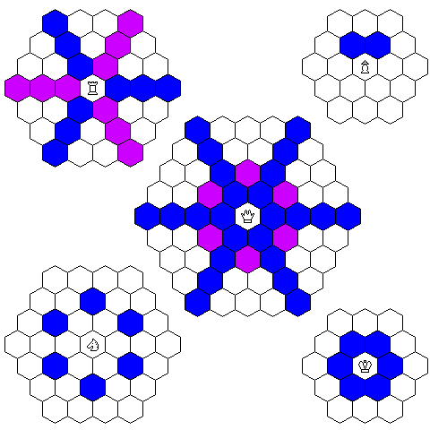
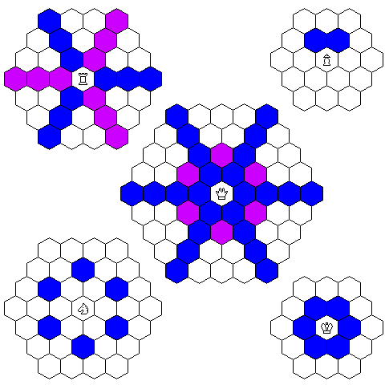

Aquest apartat no vol ser, ni de lluny, un relat de la història dels escacs, quedant fora, per exemple, les variants més orientals que personalment desconec. La intenció és deixar constància de tots els referents històrics que, d'una o una altra manera, han tingut alguna mena d'influència en el disseny de C'escacs, acompanyant-los amb algunes dades històriques addicionals, si més no, interessants.
Escacs primitius
L'origen dels escacs és desconegut, però en general hom considera que el joc del Xaturanga en la Índia, mencionat en el Mahābhārata, sigui el precursor més antic. N'hi ha constància que es jugà al Xaturanga des de el segle VI.
Tenint en compte que, després del temps d'Alexandre el Gran, els grecs van mantenir durant diversos segles un estret contacte amb l'Índia, es considera que el silenci dels escriptors grecs quant a l'existència dels escacs és una evidència de la inexistència d'aquest.
Com diguè Daniel Willard Fiske (1831-1904):
Abans del segle VII de la nostra era, l'existència dels escacs en qualsevol país no és demostrable amb la més mínima evidència documental o fiable. Més enllà d'aquella data, tot són impenetrables tenebres.
Daniel Willard Fiske The Nation, Nova York. 7.6.1900, pàgina 436
Xaturanga
Xaturanga (चतुरङ्ग) és un joc amb origens en l'imperi Gupta, i vindria a significar quatre exèrcits (literalment, que té quatre membres, txaturanga - चतुरङ्ग caturaṅga, catuḥ: "quatre"; anga: "braç"), sent hasty-ashwa-ratha-padatam (elefants-cavalls-carros-infants) la formació clàssica dels exèrcits a la Índia, tal com descriu l'Akshauhini en el Mahabharata. És cert que també es pot argumentar en contra que en el segle VI aquesta formació ja era obsoleta, però hom pot respondre que això pot confirmar un origen encara més antic del joc, i remuntar-se a la l'època de la dinastia Nanda i Alexandre el Gran. Curiosament les referències més antigues no són directament del Xaturanga, sinó de l'arribada com a Xatranj a Pèrsia des d'Índia, i alguns texts més difusos de la Xina.
En un tauler de vuit per vuit caselles d'un mateix color, trobem les peces: Pedàti (Soldat o Peó), Ratha (Carro o Torre), Ashva (Cavall o Cavaller) i el Rajah (Rajà o Rei), totes elles amb els mateixos moviments i posicions en el tauler que els seus equivalents moderns, amb la salvetat que els peons no tenien el moviment doble inicial. Tanmateix no s'havien definit encara els moviments de l'Alfil i la Dama, però n'hi havia unes altres peces en el seu lloc: El Mantri (Conseller), també anomenat Senapati (General), es posicionava en el lloc de la Dama, al costat del Rajà, i movia un únic quadrat en diagonal en qualsevol direcció. El Gaja, també anomenat Hastin (Elefant) es posicionava en les actuals posicions dels alfils.
Les regles exactes del joc no s'han conservat, però no existia l'enroc. Segons l'historiador dels escacs John Gollon va descriure en 1968, el Rajà, si no havia estat amenaçat, podia fer un únic moviment de cavall; aquest moviment de vegades s'anomena enroc indi. També va descriure com les posicions inicials de les fitxes diferien de l'actual, perquè el Rajà es posicionava en el taulell a la dreta de cada jugador, no quedant així els Rajàs de tots dos oponents enfrontats. El Mantri no tenia moviment per tot el tauler, només pel que en un escaquer modern serien els escacs blancs; és el que es diu debilitat de color.
És a dir, que en un escaquer modern tots dos jugadors tindrien el Rajà en un escac negre, i els Mantri en escacs blancs, de tal manera que el Mantri d'un jugador es podria enfrontar al de l'altre. El posicionament dels dos Rajàs enfrontats és possible que fos una evolució, doncs així era en el Xatranj que coneixem de l'era musulmana, repartint l'aventatge del Mantri en uns escacs per a un jugador, i en els altres per a l'altre.
Sembla que existia la definició d'una primera fase del joc on els jugadors situaven les seves peces en formacions anomenades Vyūha, per analogia militar, com les recomenades pel mestre indi Chanakya, filòsof i conseller del primer emperador de l'Imperi Màuria. Aquestes obertures primitives podrien haver estat semblants a les definides posteriorment pel Xatranj de l'era musulmana. Les referències en el Xaturanga al segle IV AC són, doncs, persistents, tot i no haver proves de la existència del joc anteriors al segle VI DC, com vuit-cents anys després de les formacions militars que fa referència el joc. Potser només és el record d'altres temps representat molts segles després en un joc, però hom està d'acord que en el Xiangqi (象棋 – escacs xinesos) es representa una batalla del final del segle III AC, uns fets històrics cohetanis a Imperi Màuria, però fins i tot més pròxims a la dinastia Nanda que a les posteriors proves físiques de la existència del joc.

Boedawgyi, CC BY-SA 3.0
via Wikimedia Commons
Els dubtes més grans referents a les regles d'aquest joc potser són les referents als moviments del Gaja (Elefant). Es consideren fonamentalment dues alternatives:
- Podia moure dos quadrats en qualsevol direcció diagonal, saltant el quadrat que travessa.
Aquesta opció queda avalada pels moviments definits posteriorment en el Xatranj, així com el Vaixell en el Xaturaji, que demostra que en l'Índia era un moviment conegut i popular. S'ha de considerar que constitueix un moviment molt limitat, restringit només a una quarta part de les caselles del tauler, i té cert sentit en el Xaturaji, joc de quatre jugadors, de manera que el vaixell de cada jugador pot moure a un conjunt de caselles diferent a les dels altres jugadors, fent que un vaixell no pugui capturar els altres vaixells excepte en la posició específica en que tots els vaixells es troben en el centre, sent una jugada específica estipulada com a part de les regles.
- O bé, podia moure una única casella en diagonal, incorporant a més un moviment ortogonal
endavant, representant els moviments les quatre potes i la trompa d'un elefant.
La segona opció, que personalment em sembla més probable, coincidiria amb l'elefant dels escacs orientals, com els escacs birmans (Sittuyin – စစ်တုရင်), el moviment del noble (khon) dels escacs tailandesos (makruk – หมากรุก), del guarda (koul) dels escacs cambodjans (Ouk chaktrang – អុកចត្រង្) i del general de plata (銀) del shōgi (将棋) japonès. Aquest moviment, una casella en diagonal o bé un moviment endavant, ja el descriu Al Biruní al voltant de l'any 1030, en el seu llibre
Índia
.
Les variants d'escac birmana, thai, i cambodjana, actualment s'han fusionat en el que es coneix com ASEAN Chess (Association of Southeast Asian Nations).
Tampoc n'hi ha seguretat del moviment del Ratha (Carro), tot i que hom pensa que el moviment correspon exàctament amb el moviment de la moderna Torre. Tenim múltples jocs amb els moviments horitzontals i verticals, tant en el Xaturaji en l'Índia, i en molts altres jocs d'altres llocs: tot i que no ens han arribat les regles, probablement el Ludus latrunculorum dels romans, o fins i tot el Petteia dels grecs, i sembla que també trobariem aquest moviment en el Hnefatafl viking.
És cert que també s'ha descrit la possibilitat que el moviment estiguès limitat a moviments de dues caselles, com un Dabbābah (torre d'asedi) que salta dues caselles en ortogonal, quedant llavors limitats els seus moviments a un conjunt de caselles (debilitat de color). Cal diferenciar doncs, si la tesi és que podia fer moviments d'un o dos escacs, o només un moviment de dos escacs, perquè si això fos així, els moviments del Ratha (Carro) de la esquerra quedarien limitats a un conjunt d'escacs (avui dia els negres), i el Ratha (Carro) dret a l'altre conjunt disjunt (avui dia els blancs); és a dir, incorporarien debilitat de color, un posicionalt en negre i l'altre en blanc.
En la variant índia dels escacs moderns, que encara compta amb algun record en el seu país, la Torre és l'Elefant, representant així l'Elefant una potència fins i tot superior al Cavall, i fa servir el Camell com a representació del nostre Alfil. En la meva opinió, quan es considera el moviment del Gaja (Elefant), aquest hauria de ser un argument a tenir en compte. Si podem dubtar que el Gaja (Elefant) tinguès debilitat de color, tampoc és probable que ho tinguès el Ratha (Carro), quedant així la debilitat de color com a una característica del Mantri.
També és molt cert que fora possible que el Xaturanga evolucionés, existint més d'una versió o variants per zones, i l'èxit i la estandarització del Xatranj en el proper món islàmic podia ser vist com a una variant més. Així, amb la reputació d'origen persa del Xatranj, probablement fou qui deixà el Xaturanga oblidat; l'época islàmica de la Índia començà amb les primeres colònies en el segle VIII i soldanats a partir del segle X, però la important era mogola no començà fins el segle XVI, i des del segle XVII ja va quedar palessa la influència en l'Índia dels escacs occidentals.
Xaturaji
|
|
|
|
|
|
|
||
|
|
|
|
|
|
|
||
|
|
|
||||||
|
|
|
||||||
|
|
|
||||||
|
|
|
||||||
|
|
|
|
|
|
|
||
|
|
|
|
|
|
els aliats es posicionen en cantonades oposades.
El Xaturaji va ser una evolució del Xaturanga en la mateixa Índia, donant lloc a un joc per a quatre persones d'estratègia i atzar: dos daus de quatre cares determinen les dues peces que ha de moure cada jugador, perquè es fan dos moviments cada vegada. Tot i que s'havia considerat un joc anterior al Xaturanga, i probable origen d'aquest, avui dia hom accepta que és a l'inversa.
Mentre Xaturanga significaria quatre armades
: infanteria, cavalleria, carros i elefants,
Xaturaji vol dir quatre rajàs, una forma de dir quatre jugadors
. Els jocs amb més
de dos jugadors tenen tendència a degenerar, perdent el component estratègic per prevaldre la
diplomàcia entre els jugadors, desequilibrant el joc. Però recordem que el Xaturaji és
un joc amb un gran component d'atzar, i, a més a més, en el Xaturaji sembla que els jugadors
formen dues parelles, jugant una parella vers l'altra. En qualsevol cas, pot ser un joc inspirat en
els escacs i amb certes connexions, però no poden considerar-se uns escacs, com podriem dir
del Xaturanga o d'altres variants que citarem aquí.
L'objectiu no és el Rajà enemic, que és una peça més del tauler, sinò fer punts capturant peces; l'excepció és la regla que dona la partida guanyada al jugador que captura els Rajàs dels altres tres jugadors, obtenint els punts equivalents a les tres armades senceres.
Una peça curiosa que incorpora el Xaturaji és el Nauca (Vaixell), que mou (salta) dos quadrats en qualsevol direcció en diagonal; això limita les caselles on pot arribar a la vuitena part del tauler, quedant les caselles distribuïdes entre els quatre jugadors de manera que és impossible que el Vaixell d'un jugador coincideixi (capturi) el d'un altre jugador. Sembla que aquest seria un argument que contradiu l'afirmació que fossin els mateixos moviments del Gaja (elefant) en el Xarutanga, doncs veiem com el comportament era ben conegut; a més, la peça en el Xaturaji no es diu Gaja, sino que pren el nom de Vaixell, reservant el nom de Gaja per una peça que mou igual que la Torre dels nostres moderns escacs occidentals.
El Xatrang persa

La paraula del sánscrit चतुरङ्ग (txaturanga) en pahlavi o persa sassànida perd la 'u' per síncope
i la 'a' final per apòcope (txatrang: چترنگ). Alguns idiomes diferèncien el Xatranj
com la versió àrab (árab: شطرنج; persa: شترنج), reservant llavors la denominació
Txatrang
per als escacs perses anteriors a l'invasió àrab.
La transformació fonètica àrab és més subtil, i no l'he trobat reflectida en cap text català,
així que faig servir Xatranj indistintament per ambdós. Efectivament, també el
català fa servir xaturanga, en comptes de txaturanga
.
Existeix un text en pahlavi (persa sassànida)
Explanation
of Chess and arrangement of Vin-Artakhshir
que s'ocupa de la història més antiga de la invenció dels jocs d'escacs i backgamon
en el segle VI de la nostra era, durant el govern del gran rei de reis sassànida,
Cosroes I (531-579 EC). A més, altres textos en pahlavi esmenten els jocs
dels escacs i el backgammon en un context que deixa clar que formava part de
l'educació cortesana. Khusro ud Rēdag
(Cosroes i el Patge
)
es refereix a la mateixa època, però Kārnāmag ī Ardaxšīr ī Pābagān
(Llibre dels fets d'Ardaixir, fill de Pabag
)
els fa referència en l'època de la creació de l'imperi sassànida
(inici del segle III), però aquest text, no obstant això, sembla ser una
compilació tardana datada en el segle VII, probablement durant el regnat de
Cosroes II.
El text, ben conegut per haver-se inclòs posteriorment en el
Libre dels Reis
,
epopeia nacional de Pèrsia, escrita i compilada per
Firdawsí sobre l'any 1000,
explica, a mode d'un conte oriental, l'arribada del Xatranj des
de l'Índia, això sí, reservant-se la creació del Nêw-Ardaxshîr,
que aviat va donar lloc al Nard, que posteriorment
es transmet a Índia i és el precedent del Backgammon. Les últimes
datacions del text original el situen a voltant de l'any 600, coincidint
amb les primeres evidències arqueològiques dels escacs en Iran, un elefant
tallat en pedra negra datat en la fi del segle VI o VII. Copiem aquí una
breu traducció adaptada del text:
Dêwisharm (Divsaram), un rei indi, identificat amb Deva S'arvavarman un rei de Kanauj de la dinastia Maukhari, per Renate Syed, professora de sànscrit va enviar al seu visir, Tâtarîtos (Takhtritus), a la cort de Cosroes I Anôshag-ruwân (ànima immortal), Shâh de Pèrsia, amb molts regals:
Un conjunt de 16 peces de maragda i 16 de robí, 90 elefants i 1200 camells carregats d'or, plata, joies, perles i pluja.Un desafiament acompanyava a aquesta caravana:
Com el teu nom és Rei de Reis, això significa que els teus savis han de ser més savis que els nostres. O descobreixes els secrets d'aquest joc, o pagues tribut.Cosroes va demanar uns dies per a resoldre l'enigma. L'últim dia, Buzurgmihr es va aixecar i li va dir al seu rei:
Resoldré aquest joc fàcilment i m'asseguraré els ingressos i el tribut de Dêwisharm i prepararé una altra cosa i la hi enviaré a Dêwisharm que no podrà resoldre i li exigiré el doble de tribut; i tingues per segur que mereixes l'emperador, i els savis d'aquí són més savis que els de Dêwisharm.Va cridar a Tâtarîtos davant ell i va dir:
Dêwisharm va fer aquest joc d'escacs com la guerra. Va fer que els Reis (Shâh) anessin com dos senyors, que els Ministres (Mâdayâr o Rox) fossin essencials per als flancs esquerre i dret, que el General (Frazên) se semblés al cap dels guerrers, que l'Elefant (Pîl) se semblés al cap que protegeix la rereguarda, que el Cavall (Asp) se semblés al cap dels genets, i que els Peons (Payâdag) se semblessin als soldats a peu al front de batalla.Llavors Buzurgmihr va proposar al Cosroes que enviés a Dêwisharm un joc de la seva invenció, el
Nêw-Ardaxshîr(Ardaixir-brau), dit així en honor d'Ardaixir, el fundador de la dinastia. Aquest joc utilitzava 15 peces negres i 15 blanques sobre una taula inspirada en el moviment dels astres i el cicle dels dies.
Segons Al-Tha'alibi, els àrabs, quan entraren en Ctesifont, capital de l'imperi sassànide de Pèrsia, trobaren unes peces d'escacs de robins i maragdes, que pertanyien a Cosroes II. S'ha d'entendre el text en un context en què es considera el backgammon com un joc superior: mentre que els escacs és un joc vinculat a la batalla, el backgammon es basa en el llançament de daus i, per tant, en el destí. Segons algunes tradicions del zoroastrisme de l'època sassànida, el destí dominava i controlava la vida humana. Una traducció comentada es pot trobar en: On the Explanation of Chess and Backgammon.
En el text, els perses han d'endevinar les regles del joc, que Buzurgmihr aconseguix, i després guanyà tres partides a Tâtarîtos. La gran simetria dels moviments de les peces (veure el dibuix adjunt al Xatranj) em fa pensar personalment en alguna alteració respecte del Chaturanga, i concretament penso en els moviments de l'elefant; és cert que tampoc el moviment dels carros és conegut, però la conjetura d'haver-se mantingut el moviment és molt sòlida.
Pèrsia, just abans de l'inici del regnat de Cosroes I, va acollir els savis de l'Acadèmia Platònica (Escola d'Atenes, Acadèmia neoplatònica), clausurada per Justinià I en 529. Durant tota l'edat mitjana les matemàtiques perses varen ser una important aportació dins del món islàmic, i en tot l'occident, però també és cert que en l'època es busquen significats teològics i transcendents en les simetries i la geometria.
Xatranj, en l'àrab ash-shatranj, afegint l'article a la paraula persa, en castellà va
evolucionar com ajedrez
. De la mateixa manera, la paraula Shah, en llatí vulgar va donar
lloc a la paraula scaccus
, i finalment es va transformar en la paraula escacs, potser
amb influència del mot germànic skak
(botí, robatori) llatinitzat com a scachus. També
Shah va donar lloc a les paraules xec
, xaque
en castellà (posteriorment
jaque
), així com chess
i check
en anglès. El nom de l'elefant (Fil) s'ha
preservat en el català com Alfil, però també en castellà, italià, turc i persa; en rus es fa
servir directament la paraula слон (elefant). A més, el nom de Ferz
s'ha preservat en rus (Ферзь) per a la Dama, i com a vezér en hongarès.

Es consideren aquestes arrels filològiques en les paraules russes, vinculades directament amb el persa, junt amb altres evidències arqueològiques, la prova de la connexió persa o bizantina dels escacs en l'orient d'Europa, concretament entre els eslaus.
Curiosament, en rus, des de temps remots, per a les torres s'usa la paraula
Ладья (vaixell), en lloc de la versió original carro
, que podria
justificar-se per la influència varega i la importància dels vaixells per a aquesta cultura,
tot i que s'ha d'assenyalar que el tipus de vaixell no es refereix a un drakar viking, sinó
a una embarcació eslava.
Xatranj
El Xatranj (árab: شطرنج; persa: شترنج) va ser la evolució del Xaturanga a Pèrsia, i des de allà arribà al mon àrab cap a l'any 530, cent anys abans de la conquesta musulmana de Pèrsia. Es troba documentat per referències en àrab del periode medieval, i es desconeix si, com asegura la documentació àrab, coincideix exàctament amb la versió que es jugava a Pèrsia, perquè la documentació persa existent és insuficient per asseverar-ho. En aquest joc encara totes les caselles són d'un mateix color. Les peces eren:
- El Shah mou una posició en qualsevol direcció i sentit. Els Shah dels
jugadors es posicionen enfrontats, canviant la posició respecte del Xaturanga.
- Equivalent a l'actual Rei
- El Firz (Ferz, visir, en persa) mou una posició diagonalment en
qualsevol sentit.
- Equivalent a l'Alfersa en els escacs de l'Edat Mitja.
- El Fil (elefant, en persa) salta dues posicions diagonalment en qualsevol
sentit (la posició intermèdia pot estar ocupada). Igual que el Nauca (Vaixell)
del Xaturaji.
- Serà el primitiu Alfil dels escacs de l'Edat Mitja.
- El Faras (cavall, en persa) salta dues posicions ortogonalment i una altra
perpendicular a aquestes (els quadrats del mig poden estar ocupats).
- Equivalent a l'actual Cavall.
- El Ruhk (carro, en persa) mou tantes posicions com vulgui ortogonalment
(el camí ha de ser lliure).
- Equivalent a l'actual Torre.
- El Sarbaz (soldat, en persa), posteriorment traduït en àrab com a
Baidaq,
mou una posició "endavant", però captura diagonalment "endavant". Quan arriba a la darrera línia del
tauler, es transforma en un Firz.
- Equivalent a l'actual Peó, però sense moviment inicial doble i diferents regles de coronació.
|
|
||||
|
|
||||
|
|
||||
|
|
|
|
El Firz va ser conegut en Catalunya com Alfersa, però militarment s'hauria de conceptualitzar com el senyaler (comes spatariorum o alferes), aquell que duu la banderola o estendard, cap de la guardia reial. Observar que el Firz mou en diagonal, i per tant avui dia diriem que era una peça amb debilitat de color, si el Xatranj fes servir els padrons moderns d'escaquer en blanc i negre. Es dona el cas, pel posicionament inicial de les peces, canviada respecte del Xaturanga, que el Firz d'un jugador mai podia capturar el de l'altre, una situació que encara reflectiren els versos de l'Escacs d'amor per la Dama dels escacs moderns.
També el Fil movia en diagonal i era una peça amb debilitat de color, parlant en termes dels padrons moderns d'escaquer en blanc i negre. Però no només això; era una peça encara més limitada, perquè només podia abastar la quarta part dels escacs dels que correspondria per a un dels colors, pel fet que movia (en realitat, saltava) només pels escacs de les fileres senars de columnes senars. És a dir, el Fil era una peça que només podia abastar la vuitena part dels escacs, amb un valor útil no gaire més gran d'un Peó.
En el Xatranj es definiren problemes per a resoldre (mansūbāt), i també posicions d'obertura, on, tot i no indicar la manera d'arribar-hi, s'estudiaven les diferents aventatges i moviments des de la posició, que els jugadors trataven d'imitar. També es van estimar la valoració de les peces, calculades simbólicament en Dírhams (darāhim). També es van establir categories entre els jugadors d'escacs, i l'aventatge que havia de concedir un jugador d'una categoria superior quan jugava amb un de categoria inferior. Els grans jugadors eren famosos en la cort, i els seus noms han arribat fins els nostres dies.
Actualment existeixen els escacs etíops (Senterej) que es juguen tradicionalment en Etiopia i Eritrea.
Aquests escacs conserven tots els moviments del Xatranj, tot i que es caracteritzen per uns
moviments inicials de les peces que fan els jugadors, indeterminats en número i no necessàriament
alternats, moviments que acaben amb la primera captura. Es valora el sentit artístic del joc,
considerant
més respectable el mat fet amb l'Alfersa o amb un Elefant (Fil), i encara
més admirable si el fa un Peó; el mat amb un Cavall o una Torre
es consideren poc artístics
.
Evolució dels escacs occidentals
Image: Nevit Dilmen, Public domain
via Wikimedia Commons
Les diferències més importants dels escacs occidentals medievals amb el Xatranj, a més d'algunes regles que es van anar modificant a llarg dels segles, van ser l'aparició del tauler escacat en dos colors, i la tornada a les peces amb representacions figuratives que havien estat la forma habitual abans de l'islam, i des dels segles XI i XII es van recuperant en occident.
Tot i que es desconeixen els detalls de la ràpida extensió dels escacs per
tota Europa, podem intuir els motius: La difussió per les corts
musulmanes i els estudis del Xatranj pels erudits àrabs i perses
de l'època el convertien en un joc distingit
,
fins i tot cult
, i junt amb les legendàries riqueses associades
amb alguns conjunts de peces, era fàcil associar-lo a luxe, erudicció
i distinció. Ni fet a mida per a la noblesa, particularment en les
etapes en què es va sentir certa enyorança de la cultura clàssica, en els
denominats periodes medievals de renaixença: macedònica, carolíngia,
otoniana, i finalment el pre-renaixement gòtic del segle XII. Les
formes figuratives poden haver resultat rellevants quan es va associar
el luxe amb les peces del joc, però es requeria un entorn de certa
erudicció en la cort per a incorporar el joc propiament dit, que
signifiquès alguna cosa més que merament la possessió d'unes peces
precioses, que en els primers anys, en els segles IX i X, sovint
acabaren embellint relicaris. El joc s'associà amb els reis, i
moltes llegendes participaren en donar-li prestigi; aviat el
coneixement del joc és part dels coneixements que es requereixen en un
cortesà o en un noble, de la mateixa manera que els sabis musulmans ho
havien inclòs en els ensenyaments pels membres de la cort.
Però no n'hi ha dades concretes de l'adopció del tauler escacat que el diferència del Xatranj islàmic. La primera referència a un escaquer bicolor ja apareix en el primer escrit conservat que esmenta els escacs en occident, a començament del segle XI: versos de scachis; des de llavors el tauler escacat serà la identitat dels escacs occidentats en front el Xatranj islàmic. Entre finals del segle XII i començament del XIII podem afirmar que es troben generalitzats els escaquers de dos colors, amb l'absència total de taulers monocolor, el Xatranj, en els escacs occidentals.
Pensem que amb anterioritat al segle XI la presència del joc en Europa era amb la forma del Xatranj, com ens ho fan pensar les peces simbòliques abstractes d'influència islàmica, tot i que és cert que no tenim cap constància, i existeixen alguns indicis de l'arribada dels escacs a Bizanci des de Persia amb anterioritat als musulmans.
L'expansió del Xatranj per l'Europa occidental és arqueològicament present en diversos indrets: Osnabrück (Alemanya), Witchampton (Dorset, UK), Chatenois (Alsacia, França), Cluny (França), La Gironda (França), Loir i Cher (França), Nuremberg (Alemanya)... Començant amb el segle X, però amb exemples molt notables del segle XI, les peces comencen a prendre forma figurativa en detriment de les formes abstractes simbòliques; definitivament en el segle XII serà el més habitual, desapareixent el simbolisme islàmic en el segle XII.
Tenim constància de l'existència d'escaquers en dos colors des de l'any 1000 de la nostra era (versos de scachis), i volem pensar que el canvi va quedar associat a les noves peces figuratives, doncs són les dues diferències aparents dels escacs medievals amb el Xatranj, i les dates són molt coincidents.
De qualsevol manera, en molts pocs anys el joc arribà arreu: des d'Itàlia fins a Escandinàvia, des de Gran Bretanya fins a Rússia... Des de l'any 1000 trobem referències disperses per tota Europa, i a partir de l'any 1100 ja era estès pràcticament arreu, especialment entre la noblesa.
Introducció en Occident
Península ibèrica: Castella i Lleò

NACLE, CC BY-SA 4.0, via Wikimedia Commons
Fou, sense dubtes, la península ibèrica la principal porta d'entrada del Xatranj en Europa, com a conseqüència de la presència musulmana en la península des de començaments del segle VIII fins a finals del XV. Tot i això, s'ha d'entendre que en els segles IX, X, i gran part del segle XI, el contacte dels regnes cristians de la península amb la resta d'Europa fou generalment llunyana per a un fluid intercanvi cultural, començant practicament amb la mort d'Almansor i l'aparició dels Regnes de Taifes, quan començaren els tímids contactes europeus de Sanç III de Pamplona a finals del segle X i inicis del segle XI. Anteriorment, la resistència àstur i vascona hi era en un aïllament que fins i tot es mantenia culturalment separada del món islàmic, els seus enemics.
L'Escola de Traductors de Toledo, creada a començament del segle XII, després de la dominació cristiana en Toledo i uns primers anys de convivència religiosa, amb l'apropiació dels escrits àrabs va crear un centre cultural de molta importància per a tota Europa. Aquest centre arribà al seu clímax en el segle XIII, amb Alfons X, qui feu una gran recopilació del coneixement islàmic dels escacs, probablement coneixement d'origen persa, incorporant moltes aportacions castellanes.
El Camí de Sant Jaume fou un punt important per als intercanvis culturals amb Europa, però l'inici a nivell europeu es pot datar en el segle X, amb la peregrinació d'alguns clerges i bisbes. La gran expansió i popularització es dona en el segle XI, coincidint amb un entorn polític més favorable després de la mort d'Almanzor, i es comença la construcció d'hospitals i millores dels camins i calçades. A final del segle XI el regne de Castella incorpora Toledo, que ja en el segle XII esdevindrà un important centre cultural, coincidint amb el suport de les autoritats al Camí de Sant Jaume protegint els pelegrins. En el segle XIII ja existeix una gran infraestructura associada al Camí, l'afluència de nobles s'incrementa, i el retorn cultural des de la península ja és força significatiu.
Així, són els segles XII i XIII el gran moment cultural de Castella, sent principalment a llarg el segle XIII que l'obra generada per l'Escola de Traductors de Toledo cobra rellevància. De fet, tot i haver-se tancat després de la mort d'Alfons X, la importància dels seus treballs es mantindrà en els propers segles.
Península ibèrica: Catalunya i Aragò

Milenioscuro (Original) Indpcatll (Translation), CC BY-SA 4.0 via Wikimedia Commons
A començament del segle IX, durant l'època de les invasions àrabs,
l'imperi de Carlemany creà els comptats de Catalunya i Aragó
com a comtats fronterers per a evitar invasions musulmanes;
foren el que s'anomenà la Marca Hispànica
,
tot i que eren un conjunt de comtats que mai tingueren una entitat
política comuna. En realitat el regne de Pamplona
mai no va ser dominat, ni pels visigots,
ni pels musulmans. El comptat d'Aragó esdevinguè regne després
de l'unió amb el regne de Pamplona, alliberant-se primer del
vasallage franc, i a començament del segle XI del vasallage de
Pamplona. Catalunya s'allibera del vassallatge començant el sistema
hereditari amb Gifré I, i el seu fill, Gifré II,
començant el segle X ja no presta vassallatge als francs.
Existeixen en Catalunya les primeres referències a fitxes d'escacs esmentades en els testaments d'Ermengol i Ermessenda, l'existència física de jocs de cristall de roca com els d'Àger, l'abadia de Ripoll, o els els ja perduts de Roda d'Isábena. Existeixen altres jocs de peces de cristall de roca, i podem esmentar els escacs de San Rosendo d'Ourense, o els d'Osnabrück en Alemanya. Algunes teories indiquen que aquests escacs europeus de cristall de roca podrien tenir origen en Còrdova, bé comercialment, o bé ser resultat del saqueig de Còrdova pels catalans en l'any 1010, tot i que en Catalunya tenim notícia de l'existència d'alguns d'aquests jocs amb data anterior a aquesta expedició militar. L'altre origen que sempre s'ha considerat és Egipte, però les datacions indicarien que de qualsevol manera les peces molt probablement haurien entrat en Europa per la península ibèrica, destacant les repetides referències en Catalunya
Una altra relació amb Catalunya força important és el papa Silvestre II. Gerbert d'Orlhac l'any 967 viatjà a la cort del comte de Barcelona, Borrell II, on va romandre tres anys en el Monestir de Santa Maria de Ripoll, Girona. Es creu que en aquest període va viatjar també a Còrdova i a Sevilla. Aquesta estada a la península Ibèrica li va permetre entrar en contacte amb la ciència àrab i iniciar-se en l'estudi de les matemàtiques i de l'astronomia. Viatjà a Roma en peregrinació acompanyant al seu protector, el comte Borrell II, la qual cosa li va permetre conèixer al llavors papa Joan XIII i a l'emperador Otó I, qui li va nomenar tutor del seu fill, el futur Otó II. Uns anys més tard, l'arquebisbe de Reims, Adalberón, el va cridar per al seu col·legi episcopal, on va ensenyar i va fer ensenyar coneixements aritmètica, geometria, astronomia i música. Quan morí Adalberón, Gerbert fou nomenat nou arquebisbe de Reims. Finalment, en l'any 999 fou nomenat Papa, amb el nom de Silvestre II.
Cal recordar que el segon fill de Borrell II de Barcelona fou Ermengol I d'Urgell, qui en el seu testament deixà una de les primeres constàncies de la possessió d'un joc d'escacs en occident. També és rellevant el fet que en la catedral de Reims s'ha conservat una peça d'ivori que s'havia fet servir per embellir un relicari, però era en realitat una luxosa peça oriental d'escacs; actualment es troba en el museu de Cluny, París. La datació és del segle XII, però no és descartable que fos a final del segle X quan era una peça d'escacs, en el llarg temps que Gerbert, que fos més tard Silvestre II, va restar a Reims.
Aquestes nombroses referències prèvies en Catalunya als escacs segur que tingueren força influència posteriorment, quan entre els segles XII i XV el regne d'Aragó es va estendre per València, Mallorca, Sardenya, Nàpols, Còrsega, Rosselló, Provença, Cerdanya i fins i tot Atenes. Aquests regnes foren, sense dubtes, un punt de gran importància per a l'intercanvi cultural, sovint coincidint amb la cultura bizantina.
Fem un incís, i recordem que culminà la contribució catalana amb
la introducció des del regne de València dels nous escacs a finals
del segle XV. En aquell moment, les relacions que València manté
amb la Itàlia del Renaixement, arran les expedicions
d'Alfons el Magnànim i l'establiment de la cort a Nàpols,
així com els contactes de la influent família Borja, amb
origen a Borja (Aragó), més tard establerta a Xàtiva
(regne de València), posteriorment en Gandia i
Itàlia. Això fou la causa de la ràpida propagació a Itàlia dels
Escacs de la Reina
, i trobem en 1506 a
Francesc Vicent
en la cort de Lucrècia Borja. Aquests escacs es propagaren
per tota la península Ibérica amb la publicació en 1495 del llibre
de Vicent amb la nova impremta, i junt amb l'èxit en les
corts renaixentistes italianes, en tota Europa van ser ràpidament
acceptades com les noves regles del joc.
València llavors, per als escacs, va ser el nexe d'unió entre les
corts renaixentistes italianes, incorporant la tradició per aquest
joc que recollia, tant de Catalunya com de Castella. Combinat amb
la recent incorporació de l'impremta, resultà en una autèntica
conxorxa que va fer triomfar els Escacs de la Reina
.
Immigració europea, monestirs, peregrinació i croades
Moltes ciutats islàmiques eren grans centres de coneixement i benestar, a més d'existir gran tolerància religiosa, de manera que eren habituals els viatges a Damasc, i molt més, a la propera Còrdova. Els podriem considerar viatges culturals, i el benestar d'aquestes ciutats incitava a molts a fixar la residència, donant-se el cas de freqüents conversions a l'islam de cristians immigrants; un senzill fenòmen d'immigració cultural i econòmica a les ciutats riques, cultes i desenvolupades de l'islam.
Un altre motiu dels cristians per les visites a terres islàmiques foren les peregrinacions a Terra Santa, Palestina. Constantí I en el 330 treslladà a Bizanci la capital de l'imperi, i construí llocs de cult cristià en Jerusalem, com l'Esglèsia del Sant Sepulcre. En el 603, el papa Gregori I encargà la construcció d'un hospital en Jerusalem, que era part de l'imperi romà d'orient, per a atendre i cuidar als pelegrins cristians en Terra Santa (un hospital llavors era una mena d'alberg), indicant que ja era un fenòmen significatiu.
Des del segle IV s'establiren noves rutes de peregrinació travessant les terres de l'imperi romà d'orient, rutes que no havien estat comuns fins llavors, doncs els cristians havien estat perseguits. Aquestes rutes més tard s'aprofitaren per a les croades.

1096-1099
Original work: Captain Blood at de.wikipedia; Translation: Oxag at fr.wikipedia., Public domain, via Wikimedia Commons
Des del final del segle XI fins al segle XIII es donà el fenòmen de les croades, que també tinguè l'efecte indirecte d'intercanvis culturals amb la noblesa, però el caracter forçat, determinat per les circumstàncies, els acosta més als botins de guerra; sovint les peces d'escacs de cristall de roca o d'ivori es feien servir com a embellidors d'altres peces, i, tot i existir referències, no s'ha trobat cap joc de peces amb gemmes precioses.
Malgrat que molts nobles viatjaren a les terres de Palestina, el fenòmen frenà els intercanvis que generaven l'immigració cristiana pacífica a terres de l'islam, tot i que probablement també facilità l'acostament a una part de la noblesa que no havia tingut encara contactes. També podem recordar que totes les rutes de la primera croada travessaven l'imperi romà d'orient i Constantinoble.
Península italiana

Public domain, via Wikimedia Commons
No s'han d'oblidar altres indrets amb gran importància. Itàlia també va tenir presència musulmana; en Sicília, sota pressió àrab des dels segles VII i VIII, l'invasió començà en el segle IX, sent l'ocupació principalment entre els segles X i XI, incloent també importants assentaments en la península italiana. La prova d'aquesta influència islàmica es pot veure en els escacs de Venafro del segle XI. L'expansió dels escacs per la península italiana està confirmada cap a mitjan del segle XI per una carta de Sant Pere Damià, on el cardenal d'Ostia es queixa al Papa de l'èxit dels jocs de taula entre els clèrgues del seu entorn.
La conquesta musulmana de terres italianes va ser llarga, i amb moltes batalles. L'Emirat de Sicília va tenir una època de properitat ja en el segle X, amb una important reforma de l'agricultura, provocant que Palermo esdevinguè un centre de comerç, però l'illa no fou conquestada completament fins a finals del segle X, limitant el tràfic amb estrangers. La importància i la influència en Europa de Palermo no pot ser comparada amb la importància de l'Emirat de Còrdova, des de la península ibèrica, però sí que va tenir una major proximitat a bizantins, francs i longobards.
Havia estat fins llavors Sicília part de l'imperi Bizantí, juntament amb l'Exarcat de Ravenna entre el segle VI i el segle VII, i més tard, entre els segles X i XI, els bizantins s'establiren en el Catepanat d'Itàlia, fugint de la invasió lombarda pel nord i la islàmica per Sicília. La presència bizantina en Itàlia s'allargà VI segles, i és molt més significativa, en el temps i en territori, que la influència musulmana. Cal tenir present, però, que Bizanci representava el passat, un difícil context per a novetats culturals.
Imperi romà d'orient

Original: Varis - Derivative work: Roke~commonswiki, CC BY-SA 3.0, via Wikimedia Commons
Arribat aquest punt, és important senyalar un altre punt d'entrada dels escacs en l'Europa occidental que sembla, no només de gran importància, sinó particularment decisiu: Bizanci. Els escacs en l'imperi Bizantí entraren directament des de Pèrsia, abans de la seva ocupació musulmana; no ens ha d'estranyar que trobem elefants i carros representats en uns escacs de fabricació italiana en el segle XI; aquestes peces sembla que tindrien relació amb les guerres bizantí-normandes que van lluitar pel control del sud d'Itàlia, Sicília, els Balcans i Constantinoble.
L'intercanvi cultural de Pèrsia amb Bizanci va ser llarg, i sovint
intens. El llarg conflicte de VI segles també va
incloure llargues temporades de pau i enteniment entre ambdós imperis,
com va ser el cas del temps de Cosroes I, a qui s'atribueix haver
rebut el joc dels escacs des de l'Índia. Cosroes I va donar
acolliment als últims filòsofs pagans d'Atenes (Imperi Romà d'Orient)
quan l'emperador Justinià va tancar
l'Acadèmia neoplatònica.
En el periode que anomenaren la pau perpètua
, que durà només
vuit anys, el tractat de pau permetia que la filosofia pagana no fos
perseguida, estretant el contactes culturals. En 562 signaren el tractat
dels cinquanta anys de pau
, que només durà deu anys, i
finalment el regnat de Cosroes I acabà en una de les etapes de
guerra més cruentes amb l'imperi romà d'orient.
En un text de l'historiador àrab d'origen persa
Muhàmmad ibn Jarir at-Tabarí (839-923) es reflecteix una carta
de l'emperador Nicèfor al califa Harun ar-Raixid de l'any 802 on
s'esmenten metafòricament algunes figures d'escacs, suggerint la
pràctica dels escacs a Bizanci. Posteriorment, l'historiador àrab
Al-Massudí (896-956) es refereix als grecs, en relació amb
els escacs, en dos llocs del seu Muraj adh-dhahab
(Les prades d'or):
Els grecs (یُونانِیان Yuunaaniyaan del persa यूनानियान), els bizantins (الروم ar-Rum) i altres pobles tenen teories i mètodes especials sobre aquest joc...
Muraj adh-dhahab
Els escacs en Bizanci prenien el nom de Zaquitrion, tot i
que generalment aquesta paraula s'associa, incorrectament, amb una
modificació del Shatranj per jugar-ho en un tauler circular de
la mateixa mida que el tauler regular (64 caselles). Aquesta varietat
del Shatranj en realitat és al-Muddawara Shatranj
(Shatranj Circular), o també anomenat ar-Rûmîya Shatranj,
(Shatranj Byzantí), doncs sembla que aquesta modificació fou molt
popular a Bizanci, perquè feia el joc més ràpid i àgil, però l'origen
i la data d'aquesta variant es desconeix, i sembla més aviat
d'origen àrab o persa. Es pot descartar que en Bizanci només es juguès
a aquesta variant de Shatranj, i, de fet, totes les referències
a la variant circular són força tardanes; podem observar,
per exemple, que no apareix en el Llibre dels jocs
d'Alfons X, i això ens podria fer pensar que fos una variant creada,
com a mínim, popularitzada, quan ja el Shatranj havia estat
profundament implantat en occident, és a dir, posterior al segle XII.

Tresor de Saint-Denis,
probablement fabricada en Salerno, segle XI
Siren-Com, CC BY-SA 3.0, via Wikimedia Commons
Els historiadors admeten no disposar gaire més informació sobre els
jocs en el període bizantí (365-1450 n.e.), atribuint-ho a la
falta d'expressivitat de la literatura grega tardana, i s'ha
d'admetre que ni la quantitat de documents ni la qualitat dels
mateixos permeten assignar-li un paper protagonista. De qualsevol
manera, en la cort de Constantinoble es donà l'adopció general dels
costums i luxes perses. Fent servir la filologia, la paraula
zatrikion ζατρίκιον
, que es feia
servir a Bizanci per als escacs, és aliena al grec clàssic, i pot
demostrar-se que respon exactament al terme persa chatrang
چترنگ
, si contrastem els alfabets grec i
persa, situant la introducció en Pèrsia dels escacs abans de la
invasió àrab de Pèrsia (651).
Les peces que formaren part del Tresor de Saint-Denis, i que s'estimen fetes per artesans en Salerno, Itàlia, mostren clarament figures de les diferents peces tal com varen ser pensades pels Perses, amb l'excepció de la figura de la reina, clarament occidentalitzada. La influència bizantina en el sud d'Itàlia és indiscutible, i aquesta mena d'eborària (artesania d'ivori) n'és molt representativa.
Khàzars i varegs

Foto: history.chess.free.fr
Els khàzars foren un poble turquès, que era aliat de l'imperi romà d'orient, Bizanci, en les guerres contra els perses sassànides. Hi eren al comandament de les rutes occidentals de la Seda, exercint un paper comercial clau com a cruïlla entre la Xina, Orient Pròxim i la Rus de Kíev. La Ruta del Volga connectava el kanat khàzar pel nord amb la Rus de Kíev i els finesos, i pel sud, després de travessar la mar Càspia, Ctesifont, la capital persa, més tard eclipsada per la fundació de la propera Bagdad (761) en temps del domini musulmà. Els pactes amb Bizanci acabaren a començament del segle X, i en la segona meitat d'aquell mateix segle van ser conquerits pel Rus de Kíev.
Cap al segle IX els varegs, vikings que arribaren fins a Constantinoble (Miklagard) i Bagdad, començaren a prendre importància en les relacions comercials amb Bizanci, establint la Ruta comercial dels varegs als grecs, que unia Escandinàvia, el Rus de Kíev i l'Imperi Romà d'Orient. També van prendre el control comercial de la Ruta del Volga
Aquests nexes culturals foren els transmissors dels escacs cap a terres de Rússia, on ja es jugava a començaments del segle VIII. En aquest enllaç es poden veure algunes peces, també algunes no figuratives, d'origen islàmic, coincidint amb les dates de la invasió musulmana de Pèrsia.
Tot i no existir evidències directes, els varegs que controlaven la ruta comercial entre el Mar Bàltic i l'Imperi Romà d'Orient, podrien haver contribuït en la difussió dels escacs per les terres vikingues del nord d'Europa, com ens poden fer pensar algunes troballes arqueològiques, amb representacions figuratives molt priemerenques.
Ja en un temps més tardà, en l'era vikinga cristianitzada, trobem les peces de l'illa de Lewis, del segle XII. Aquesta illa era llavors part del regne de Man, sota vassallatge de Noruega, amb una curiosa barreja d'elements escandinaus i celtes. En aquestes peces podem veure uns Berserkers representant les torres (guardians), una adaptació natural, si es considera que els vikings no tenien cap tradició de carros en les batalles. Els Alfils es representen fent servir bisbes; pensem que en l'època freqüentment protagonitzaven lluites armades entre ells, com va ser el cas de Wimund, el primer bisbe de l'illa de Man, nomenat en 1134, finalment capturat, encegat i castrat.
Només en islandès, les llengües del Regne Unit, és a dir anglès, gal·lès, i gaèlic escocès, en irlandès i en portuguès, els Alfils prenen el nom de Bisbes. El cas de Portugal sembla una clara influència dels pactes amb Anglaterra, que s'han mantingut des de poc després de la segona Croada, quan arribaren croats des d'Anglaterra i participaren en la conquesta de Lisboa als àrabs (1147). Des del pacte verbal en 1294, i el Tractat anglo-portuguès de 1373, que s'ha mantingut vigent fins els nostres dies, els lligams de Portugal amb Anglaterra han estat múltiples: Tractat de Windsor, lluites amb Castella en 1385, independència de Portugal, guerres Napoleòliques... Les peces de l'illa de Lewis fan pensar que aquesta nomenclatura pugui tenir origen en una vinculació vikinga. En canvi a Escandinàvia i Dinamarca el nom de l'Alfil ha pres noms fortament influenciats per la variant germànica dels Escacs del Missatger, responsable de la introducció de l'alfil en els escacs.
Imperi franc
S'han vist vincles culturals en Castella, Catalunya i Aragó per la proximitat del califat de Còrdova, en Constantinoble i l'Imperi Romà d'Orient pel seu contacte directe amb l'Imperi Sassànida dels perses, en Itàlia per l'Emirat de Sicília, i la presència bizantina, i en el Rus de Kíev, Suècia i els Països Escandinaus pels contactes comercials de khàzars i varegs. En canvi, en el més important imperi occidental de l'època, l'Imperi Franc, posteriorment anomenat l'Imperi Carolingi, i que finalment, en l'any 962 E.C. donà lloc al Sacre Imperi Romanogermànic, creat per Otó I, rei d'Alemanya i d'Itàlia, només trobem innumerables llegendes associades a Pipí el Breu i a Carlemany.
En els romanços de Carlemany diverses referències als escacs poden fer pensar en la seva existència en l'època carolíngia, però aquests romanços van ser escrits en els segles XII-XIII, i només reflecteixen la presència dels escacs en la vida de la noblesa feudal en el temps en què van ser escrits.
En l'any 800, Carlemany va ampliar l'hospital de Jerusalem, que datava de l'any 603, en l'època del papa Gregori I, i li va afegir una biblioteca.
Existeixen diverses llegendes relacionades amb la cort de Carlemany i els escacs, com la partida en temps de la batalla de Roncesvalles entre Carlemany i un tal Garin, que els va embruixar a tots dos, fins que Carlemany llançà l'escaquer amb les peces per terra.
-
Llegenda de la creació de l’abadia de Tegernsee
La llegenda de la creació de l’abadia bavaresa de Tegernsee, s’explica en una obra escrita el segle XII pel monjo d'aquesta mateixa abadia Metellus Tegernseensis,
Quirinalia
, referent a la la vida de Quirino de Tegernsee.És important, doncs fa referència als escacs en la cort dels francs durant la segona meitat del segle VIII, i sembla l'origen de la repetida associació de la cort de Carlemany amb els escacs.
En la cort del rei Pipí (pare de Carlemany), es donà la desgraciada situació que un fill del rei matà un fill d’Otger a rel d’una disputa per una partida d’escacs.
Els germans i nobles bavaresos, Adalbert i Otger es retiraren de la cort, i tornats als seus dominis abandonaren la vida secular i fundaren l’abadia de Tegernsee.
-
Les peces de Pipí el Breu
La referència que sembla més històrica apareix en un escrit en llatí medieval, datat en el segle XIII, on es narra la donació pel rei Pepí el Breu, en el 764 e.c., d'unes peces de cristall amb incrustacions d'or i pedres precioses a l'abadia de Maussac. El destí de les peces, amb motiu del trasllat de les restes de San Austremoni de Clarmont, era l'elaboració d'un reliquiari, en el qual havien de conservar-se les restes del sant.
-
Llegenda dels escacs de Carlemany
En una festa el 4 d'abril del 782, en Aquisgrà, per commemorar el quarantè aniversari de Carlemany, pretenia enfrontar-se amb el millor escaquista del regne, un soldat amb el nom de Garin el franc. Feren servir uns escacs regal d'Ibn-al-Arabi, governador musulmà de Barcelona, com a mostra d'agraïment per l'ajuda que Carlemany li havia prestat quatre anys abans contra els muntanyencs bascos, quan van haver de retirar-se pel congost navarrès de Roncesvalles.
La cort es va meravellar davant aquell joc d'escacs, realitzat per artesans àrabs. Les peces mostraven indicis del seu origen indi i persa. El tauler forjat en plata i or, tenia una mesura d'un metro per cada costat. Les peces eren de metalls preciosos filigranats, incrustats posseïen, diamants, robins, safirs i esmaragdes sense tallar. A causa a del resplendor semblava brillar amb una llum interior que hipnotitzava a qui ho contemplava.
Segons la llegenda, Carlemany influenciat per estranys efluvis que sortien del tauler, va proposar una aposta que consistia en el següent:
Si el soldat Garín em guanya una partida, li concedeixo els territoris del meu regne, que va des d'Aquisgrà fins els Pirineus bascos i la mà de la meva filla gran en matrimoni. Si perd serà decapitat en aquest mateix pati a l'alba.
Quan portaven més d'una hora jugant i amb convulsions i excitats, Carlemany es va incorporar amb gran esforç i llançà el tauler a terra com si s'alliberés d'una maledicció, les peces van caure a terra i la partida es va interrompre.
A dir dels presents la partida es va abandonar, ja que van considerar que aquells escacs estaven posseïts per una força maligna. No obstant això, en un to menys tens es va iniciar una nova partida, triomfant Garin i rebent com a recompensa la Propietat de Montglane, en els Baixos Pirineus.
Redacció del text: Roger Salvo
Escacs i escacs
De qualsevol manera, en l'Europa occidental, versos de scachis, en l'abadia d'Einsiedeln (Suïssa, Regne Franc), és el text europeu més antic amb referència als escacs. La mateixa Gamer, Helena M., la primera qui va destacar l'importància d'aquest text, en observar l’absència de terminologia sarraïna en els versos alpins, es decantava més aviat per una influència d’origen bizantí que no pas musulmana, tot i que és cert que trobem peces islàmiques de cristall de roca en Osnabrück, província de Hannover, Baixa Saxònia.
els escacs apareixen simultàniament – parlant en termes aproximats, s’entén – en els monestirs alpins de la dinastia otoniana[5] i entre la noblesa catalana. contactes anteriors al segle XI, com els de Joan de Gorze ambaixador d’Otó I a Còrdova en la dècada dels 950[7], ometent però la personalitat que específicament permet lligar les dues aparicions més primerenques dels escacs a Einsiedeln i a Urgell, que no es altre que el més que conegut Gerbert d’Aurillac, el que serà el papa del mil·lenni, Silvestre II. Gerbert conegué de primera mà la noblesa catalana de finals del segle X i feu de tutor d’Otó III per encàrrec del seu pare. Coneixent el seu gust per la lògica i la matemàtica[8], semblaria que fora una persona especialment dotada per apreciar els beneficis del joc; més encara en el seu rol de tutor de l’hereu de la corona germànica. I per si això fos poc, tenim que precisament, l’Ermengol I d’Urgell que llegà el joc d’escacs, fill com era de Borrell II comte de Barcelona, tot i que nasqué quan Gerbert ja havia completat la seva instrucció amb Ató, el bisbe de Vic, sí sabem que en el canvi de mil·lenni viatjà a Roma, just quan Gerbert es feia dir Silvestre II. De manera que sí tenim que Gerbert es relacionà directament amb el primer propietari conegut d’un joc d’escacs a l’Europa occidental i també amb els rectors de la dinastia que promovia els monestirs on apareixen els primers esments literaris. He later taught in several monasteries outside Spain and as a consequence he may have started to incorporate the use of chess in his teachings. He may have adopted this practice from exposure to a sophisticated education nurtured in Arabic and Iberian sourcesEs pot associar documentalment la proliferació dels escacs per l'Europa occidental, si ignorem les legendes que l'associen amb Carlemany, com a mínim amb la posterior renaixença otoniana, originada arrel del matrimoni en el 951 de d'Otó I el Gran amb Adelaida d'Itàlia, que va unir els regnes italià i alemany, acostant així Occident a Bizanci.
Aquestes dates corresponen amb la datació de versos de scachis, finals del segle X o començaments del segle XI, pràcticament coetànies amb el testament d’Ermengol I comte d’Urgell, datat en l'any 1010, . Gerbert d’Aurillac, el que serà el papa del mil·lenni, Silvestre II, viatjà a la cort del comte de Barcelona, Borrell II, per tal de rebre una adequada formació científica, sota el mestratge del bisbe Ató de Vic. Silvestre II va romandre tres anys al Monestir de Santa Maria de Ripoll, lloc on també n'hi ha constància documental de l'existència d'uns escacs de cristall de roca, i també altres en la catedral de Roda de Isábena. Es creu que en aquest període Silvestre II va viatjar també a Còrdova i a Sevilla.
() , que hauríem de considerar conseqüència de viatges culturals i immigració a les florents terres islàmiques de Còrdova i Damasc.
Rey Canuto Abadía Hyde, en Winchester, en 1144, durante la guerra civil. Se refiere a un manuscrito de Cotton, que habría quedado dañado por el fuego. entre los obsequios que el Rey Canuto hizo a la abadía (muchos de los cuales desaparecieron en aquel año de 1144) se encontraba dos juegos de ajedrez, donados por el Rey CanutO
Versus de scachis: Inici dels escacs occidentals
La referència als escacs en occident més antiga coneguda és el poema en llatí Versus de
scachis
, datat al voltant de l'any 1000. Es va trobar en dos escrits conservats
en la biblioteca de l'abadia d'Einsiedeln (Suïssa).
El text original es pot consultar en wikisource,
i la seva importància va ser destacada per Gamer, Helena M. The Earliest Evidence
of Chess in Western Literature: The Einsiedeln Verses.
Speculum 29 (1954): 734 - 750.
El precedent de l'Alfil rebia el nom de Comes –comte, però també company– o Curvus –torçat–; els seus moviments es limitaven a saltar dues caselles en diagonal, com el Fil del Xatranj. La paraula Ferz, transcrita en llatí com a Ferzia, Fierze en francès medieval, va dur a Vierge (Verge), i apareix llavors en llatí el nom de Regina, present en aquest poema, molt abans de ser modificats els seus moviments. També apareix en aquest poema el caràcter bicolor de l'escaquer per primera vegada.
La figura de la Dama en aquesta època encara tenia els moviments de l'Alfersa, una única casella en diagonal. El canvi de nom sembla que va ser progressiu, i en El Llibre dels Jocs d'Alfons X, encara es fa servir en nom d'Alfersa.
Certament, encara ens trobem més a prop del Xatranj que dels escacs moderns occidentals, però en l'occident catòlic comença a diferenciar-se per les casselles de dos colors, i l'adopció del nom de Dama / Reina per referir-se a l'Alfersa. També es comencen a pensar alternatives a l'elefant (Fil), doncs els elefants de guerra no eren una realitat en l'occident medieval. Però no serà fins el segle XIII que apareix una peça amb els moviments del modern Alfil en els Escacs del Missatger – Courier Chess.
Referències a jocs

-
Rèplica comercial dels escacs d'Afrasiab. Entre l'any 600, i abans del 712 DC: Les peces d'escac més antigues que s'han trobat són les peces d'Afrasiab, prop de Samarcanda, Uzbekistan. Es conserven en el Museu Afrasiab de Samarcanda. Es pot observar les formes del Xatranj persa abans de la dominació islàmica.
-
En les terres de dominació islàmica les peces del Xatranj eren geomètriques, i no representaven figures humanes. Malgrat l'acceptació de les altres religions del llibre, altres, com el zoroastrisme o el budisme, no foren inicialment acceptades. Molts jocs d'escacs d'aquest periode són de procedència àrab, i en Espanya fins i tot de mozarabs de la península.
-

Foto: Miguel Ángel Nepomuceno Segle IX‑X: Los bolos de San Genadio (Pañalba de Santiago, Lleó). Només quatre peces d'os s'han conservat, associades al sant.
Podem llegir l'història en
Las piezas de ajedrez de San Genadio
explicada pel mateix Miguel Ángel Nepomuceno, mestre d'escacs que va anar a buscar les peces, ja esmentades en 1843 pel escriptor Enrique Gil y Carrasco, i amb diverses referències posteriors Una història d'Espanya profunda. -

Foto: Museu Arqueològic de Venafro Segle IX‑X: El joc d'escacs de Venafro (Itàlia) és probablement testimoni de la presència àrab en Venafrum, ocupada entre els segles IX i X per les tropes de l'emir de Bari. Són peces fabricades d'os.
-

Foto: museudelleida.cat Segle X: Les peces de l’excol·legiata de Sant Pere d’Àger, de cristall de roca. Al segle XI, el conjunt estava format per 96 peces, i al XVI se'n conservaven només 44. Actualment en queden només 29. D'aquestes, 19 peces es conserven en l’antic Museu Diocesà de Lleida, pero les altres 10 es troben en el Museu Nacional de Kuwait. Foren documentades a començament del segle XIX pel pare Jaime Villanueva i Astengo, i això va fer possible la seva recuperació arqueològica i conservació.
Sembla que serien aquestes mateixes peces les que apareixen en el testament d'Arsenda de Àger en 1068, i uns anys més tard en un inventari d'Arnau Mir de Tost, senyor d'Àger.
Es pensa que l'origen d'aquestes peces podria estar en Egipte, però actualment també es considera Còrdoba com a possible origen de les peces, un taller de Medina Azahara, en comptes d'Egipte. Es pot llegir més informació en l'article del lloc web history.chess.free.fr. Peces similars, però en menor número, han estat trobades en altres indrets d'Espanya: San Millan de la Cogolla (La Rioja) i San Rosenda de Celanova (Orense, Galicia).
-
Segle X: Les peces de la catedral de la ribagorçana Roda de Isábena foren documentades a començament del segle XIX pel pare Jaime Villanueva i Astengo:
Un saquillo con varias piezas de cristal, que serán unas cuarenta entre grandes y pequeñas, dentro del arca llamada de san Valero
, i les identifica com apiezas del juego de escaques antiguo
, semblants a les d'Àger. No es coneix la datació, doncs aquestes peces han desaparegut, però per la descripció podem pensar en una datació similar a les d'Àger. Es pensa que apareixen en un inventari de la catedral datat en el segle XII, però no es troben explícitament esmentades com a peces d'escacs. -

Ajedrez de San Rosendo
Foto: Juan Carlos Rivas Pires lavozdegalicia.esSegle X: Escacs fatimites (de l'Egipte medieval) o
Ajedrez de San Rosendo
. Es preserven en el museu de la catedral de Orense, i són uns escacs de cristall de roca procedents de San Miguel de Celanova, amb 8 peces del segle X: una torre, dos alfiles, dos cavalls i tres peons. Pertanyen a l'anomenatTesoro de San Rosendo
, sembla que extretes del primitiu sepulcre del sant galleg existent en Celanova. Possiblement durant molts anys només han estat considerades simples vidrets tallats. Actualment també es considera Còrdoba com a possible origen de les peces, un taller de Medina Azahara, en comptes d'Egipte. -
Segle X: En el Monestir de San Millán de Yuso, San Millán de la Cogolla (La Rioja), l'Arqueta de San Felices inclou tres peces de cristall de roca amb forma de peces d'escacs àrab (Xatranj). En aquest cas sembla que les peces d'escacs només van ser apreciades com a peces decoratives pels reis de Navarra.
-
Any 1008: Inventari de l'esglèsia de l'abadia de Ripoll, redactat en l'any 1008, on es reporta un conjunt de 28
scacos cristallinos
. Desgraciadament les peces d'escacs no han arribat fins als nostres dies. -
Any 1010: En el testament d'Ermengol I d'Urgell, fundador del Casal d'Urgell, n'hi ha una de les primeres referències a la possessió d'un joc d'escacs a Catalunya, on li fa donació a l'abadia de Saint-Gilles-du-Gard de Llenguadoc. El testament va ser fet amb motiu de la campanya contra Còrdova dels comtes catalans. Desgraciadament les peces d'escacs no han arribat fins als nostres dies.
Cinquanta anys més tard la comtessa Ermessenda de Barcelona, cunyada d'Ermengol, vídua del seu germà gran, Ramon Borrell, va fer donació a la mateixa esglèsia llenguadociana de les seves peces d'escacs, com es pot llegir en el seu testament de 1058.
En Catalunya s'han trobat diverses referències priemerenques a jocs d'escacs en testaments i inventaris, mostrant la difussió del joc en aquestes terres, i l'afició entre la noblesa; les referències escrites als escacs en la resta de l'Occident cristià no solen ser tan primerenques
-
Segles XI i XII: També en Europa es troben peces inspirades pels dissenys musulmans del Xatranj, en alguns casos clarament resultat d'intercanvis comercials, com les peces d'Osnabrück (Alemanya), però en altres de clara confecció local: ossos de cèrvols (Polònia i Escandinàvia), de balena (Witchampton, Dorset, UK) o de narval (Escandinàvia). Desgraciadament no existeixen documents escrits associats, com en el cas de Catalunya.
-
-
Des del segle XII ja les peces d'escacs són principalment figuratives, en comptes de les figures abstractes del Xatranj. Aquesta tendència sembla iniciar-se principalment en Itàlia, que faria pensar en una influència Bizantina, però també són notables alguns exemples escandinaus molt primerencs.
-


Segle XI: El mal anomenat
escacs de Carlemany
, doncs és gairebé 300 anys posterior a Carlemany (la seva coronació va ser a l'any 800). És un escac tallat en ivori datat al voltant de l'any 1080, doncs les peces es representen amb aparell militar que correspon a normands i bizantins, enfrontats a Itàlia en les guerres bizantí-normandes. És part del Tresor de Saint-Denis, que actualment es preserva en el Musée de la BnF, París.
-

.jpg)
Segle XII: Les peces d'escacs de l'illa de Lewis, peces d'ivori de morsa de l'època del regne de Mann, que va dependre per vassallatge de Noruega. És important destacar que apareixen les figures de
bisbes
representant els alfils, i ja no apareixen elefants ni carruatges; la presència de bisbes podria indicar vincles amb Islàndia, doncs sembla ser el primer lloc on es va fer servir aquesta representació. -
Roc de mediats del segle XII, Cazaux (França). Musée du Louvre, Paris.
Foto: history.chess.free.frSegle XII: En Europa, temps després, algunes peces encara conservaren les formes simbòliques del Xatranj islàmic, tot i que aviat les valuoses peces d'ivori van ser adornades amb talles, sovint amb motius cristians.
Influència de l'església a l'edat mitjana
Un joc que alguns, com ara San Pere Damiani, acusen de ser una distracció de les obligacions per als clergues, però, sobretot, motiu d'apostes i disputes, sovint de grans quantitats. També el fet de ser un joc amb origen i gran afició en el mon musulmà, existint unes guerres religioses, pot haver participat de certes reticències en alguns moments, com podria ser el cas dels templaris. Això ha comportat una relació poc coherent entre els escacs i la religió, o fins i tot la relació dels escas amb els reis, que comportava comdemnes al joc i prohibicions, en tant es jugava entre el clergat d'alt rang, els papes i els nobles.
- Segle XI: Gregori VI (Papa de 1045 a 1047) gran aficionat als escacs.
- Segle XI: San Pere Damiani (1007-1072) escriu al Papa Alexandre II en contra dels escacs.
- 1128: San Bernard de Claraval, prohibeix els escacs en donar les regles als caballers templaris.
- Segle XIII: Innocenci III (Papa de 1198 a 1216) aficionat als escacs; en el seu escut n'hi ha un escaquer amb una àquila.
- 1208: el bisbe de París, Odo Sully, prohibeix al clergat jugar als escacs.
- 1218: L'església prohibeix el joc en el concili de París.
- 1254: Mort d'Innocenci IV. San Lluis IX, rei de França, prohibeix els escacs.
- 1255: L'església comdemna el joc d'escacs en el concili Biterrense.
- 1299: Es prohíbeix al clergat jugar als escacs.
- 1353: Peces i escaquers apareixen en els inventaris d'Innocenci IV, que va ser Papa entre 1243 i 1254.
La conseqüència d'aquesta relació és una posterior vinculació forta dels llibres d'escacs amb la moral
,
que ja trobem a Quaedam Moralitas Scaccario
– Certa moralitat dels escacs –, d'Innocenci III,
però serà la línia que seguiran tots els escrits, sent els escrits de Frai Jacobus de Cessolis un cas
força representatiu.
No va ser fins el segle XVI que Pius IV, de la família dels Mèdici cridà a Roma Ruy López de Segura, que fou considerat durant uns vint anys el millor jugador d’escacs castellà. Es pot considerar aquest punt com un canvi en la relació de l'església amb els escacs, després de 500 anys.
Escacs del missatger – Kurierspiel: L'alfil modern

Els Escacs del
missatger –Courier Chess– introdueixen els moviments moderns de
l'Alfil des d'inici del segle XIII (1202).
No va ser fins ja avançada la segona meitat del segle XV que el missatger
va ser incorporat als escacs, amb la introducció dels moviments de l'Alfil modern.
Independenment, també en el segle XIII, el Shogi japonés va incoporar una peça amb aquests
moviments. A final del segle XIII trobem el Cocodril en
El Llibre dels Jocs d'Alfons X, amb els mateixos
moviments.
La primera referència data de 1202, en un romanç artúric de Wirnt von Gravenberg, anterior a
El llibre dels escacs, daus i taules
d'Alfons X de Castella, i als Escacs de Tamerlà
.
Posteriorment Heinrich von Beringen esmenta el Courier Chess com a una millora dels
escacs, en el poema Schachbuch
, de l'any 1300, una adaptació en vers en idioma alemany de
l'obra de Jacobus de Cessolis. En aquest poema es referia clarament als moviments
incorporats per l'alfil, en forma de una nova peça anomenada Missatger – Kurier – o també
anomenat el corredor – Läufer –.
Aquesta variant, popular durant segles en molts països del nord d'Europa, s'associa particularment amb poble de Ströbeck, perquè Frederic Guillem de Brandenburg va donar a aquest poble un tauler en 1651, que es pot veure en el museu d'escacs local. El seu net, Frederic el Gran de Prússia va visitar el poble i va jugar a aquests escacs en 1744. Visitants en 1825 i 1831 van informar que el joc s'havia extingit, però la tradició dels escacs en aquest poble encara és viva.
El joc encara mantenia el primitiu alfil medieval (salt de dos espais diagonalment, schütze –caçador o arquer–), i l'alfersa o reina medieval (només moviment diagonal d'un espai). A més incorporava dues altres peces: El schleich –furtiu o bufó–, que mou una cassella ortogonalment, de la mateixa manera que el visir en els escacs de Tamerlà; i el Rath o Mann, que mou de la mateixa manera que el rei, però sense regalia.
En 1337 Kunrat von Ammenhausen descriu una partida en Constança. És en 1508 que
Lucas van Leyden pinta el quadre Die Schachpartie – el joc dels escacs
,
i en 1616 Gustav Selenus descriu detalladament les regles del joc.
Fins començament del segle XIX n'hi ha constància d'aquest joc, aproximadament una durada de sis-cents anys: des de l'època dels escacs medievals, arribant fins una llarga convivència amb els escacs ortodoxos.
Es pot consultar més informació d'aquest joc en History of Chess: Courier Chess de Jean-Louis Cazaux. També existeix un lloc web específic del Courier Chess que ha comercialitzat una còpia per a coleccionistes, fidel a les evidències històriques.
El llibre dels jocs: Alfons X de Castella


El llibre
dels escacs, daus i taules
d'Alfons X de Castella,
descriu les regles i s'inclouen 103 problemes, dels quals 89 apareixen en altres tractats d'origen àrab.
Es va escriure entre el 1252 i el 1284, i en la primera part descriu els escacs, en la segona els daus,
i en la tercera les taules (blackgamon).
És un tractat amb una recopilació d'informació particularment rellevant, doncs en aquesta data es generalitzen els escaquers amb escacs de dos diferents colors, i les peces d'escacs comencen a prendre el nom i la forma actuals, tot i que l'Alfil i la Dama no tenien encara els seus moviments moderns.
També són notables els escacs medievals Grande Acedrex que refereix el llibre, on juguen un escaquer format per 12x12 escacs, dotze Peons, un Aanca, dos Cocodrils, dues Jirafes, dos Unicornis (Rinoceronts), dos Lleons i dues Torres amb el Rei. L'Aanca era un au mitològica semblant a un Roc, però sovint es tradueix com a Griu per facilitar la comprensió.
He de reconèixer que de petit em meravellaven uns escacs que podien tenir cocodrils, unicornis o lleons... tot i que main no els he trobavat del tot adequats en el context d'un joc de batalles medievals.
És força important en els Grande Acedrex el moviment definit per al Rei, que en el seu primer moviment podia fer un salt de dues casselles en qualsevol direcció, tan en ortogonal, com en diagonal. Aquest moviment del Rei es desconeix quan exàctament es va començar a incoporar a les regles del joc d'escacs, però va ser l'inici de l'actual moviment de l'enroc.
També apareix el Cocodil, amb el moviment de l'Alfil modern, però veurem que els Escacs del Missatger són anteriors.
Podem llegir més
Tots els escaquers del El llibre dels escacs, daus i taules
eren escaquers en dos colors,
com ja era habitual els escaquers europeus d'aquest segle. El Concili de París de 1212 comdemnà
el joc dels escacs, doncs eren freqüents les apostes, i la prohibició va ser reafirmada pels reis de
Polònia i França, però no va tenir gaire efecte pràctic, com ho prova aquest tractat que va encarregar
Alfons X, o el tauler d'escacs de Lluís IX de França, que conserva el museu del Louvre.
Frai Jacobus de Cessolis

Jacobus de Cessolis
fou un frare dominic que visqué a final del segle XIII i començament del XIV.
A voltants de l'any 1300 va escriure en llatí el Liber de moribus hominum et officiis nobilium
super ludo scacchorum
(Llibre dels costums dels homes i dels deures dels nobles sobre el
joc d'escacs
), conegut com a Ludus scacchorum
–Joc d'escacs
–. El llibre va traduir-se
a molts idiomes, i la primera edició impresa es va publicar el 1473 a Utrecht. En català es conservaren
cinc manuscrits (Barcelona, Girona, Sant Cugat del Vallès, Madrid, i Roma). Tot el llibre està
impregnat de l'analogia entre els escacs i la societat medieval, atès que al segle XIV, ja estava molt
assentada la metàfora dels escacs com a reflex de la vida, i de la societat. Cal tenir en compte que la
societat medieval tenia un fort sentit guerrer.
A més d'aspectes socials, on cal considerar que els escacs principalment eren un joc per als nobles, el llibre destaca per deixar constància del doble moviment inicial per als Peons, el Rei i la Dama. En el cas dels Peons, encara es conserva; en el cas del Rei, el moviment més tard va donar lloc a l'enroc; i en el cas de la Dama va deixar de tenir sentit en definir-se els seus nous moviments, en comptes dels moviments d'Alfersa, nom occidental pel Ferz del Xatranj.
Tot i que generalment es considera ben documentat que ere un frare dominic nascut a Lombardia i establert a Gènova, també existeix la tesi que defensa que era un frare barceloní, amb el nom Jaume de Cessoles.
Xatranj Al-Kabir: escacs de Tamerlà

Posteriorment, durant el segle XIV, en el imperi Timúrida (dinastia musulmana d'origen turcomongol amb capital a Samarcanda), s'inventaren els escacs de Tamerlà, que potser d'una manera més adequada hauriem d'anomenar Xatranj de Tamerlà, una variant més gran que el Xatranj; aquests escacs s'anomenaven Xatranj Kamil (escacs perfectes) o Xatranj Al-Kabir (escacs grans). Tenien 110 caselles (10x11) i dues d'addicionals anomenades ciutadelles; en total 112. A més de les peces que es feien servir en el Xatranj, incorporava de noves: dos espies, dos camells, dues jirafes, dos dabbābah i un visir (que podem entendre com a conseller o ministre); el moviment del Visir era d'un escac en ortogonal: davant, darrera, esquerra, o dreta.
En els escacs de Tamerlà, de la mateixa manera que en altres variants històriques dels escacs, cada peó, quan arriba a l'última línia, promociona a la peça de la columna. Això crea la paradoxa de determinar en quina fitxa es promociona en arribar un peó a la última fila de la columna del rei, i així es defineix una nova peça, el Príncep, amb els mateixos moviments que el Shah (rei). Quan un jugador incorpora un Príncep, si llavors es captura el seu Rei, la partida no acaba, sinò que el príncep automàticament promociona a Rei.
La tradició d'aquests escacs va donar lloc a uns altres grans escacs –shatranj al-kabir
–:
Els Grans Escacs Turcs. En una data desconeguda, es jugaven en un tauler de 13 x 13 caselles,
i incorporaven com a peces diferents bèsties, però l'única amb un moviment diferent dels existents en
els
Escacs de Tamerlà era el Rinoceront, amb moviments que coincidien amb l'Unicorn
del Grande Acedrex d'Alfons X de Castella.
És destacable indicar que, a diferència de la tendència en els escacs europeus, que des del segle XIII ja incorporaven casselles de dos colors, tant el tauler del Xatranj de Tamerlà, com els Grans Escacs Turcs segueixen sense diferenciar les casselles fent servir dos colors.
Escacs ortodoxos
Amb aquest nom ens referim als escacs tradicionals, els escacs occidentals de l'actualitat: Joc per a dos jugadors, en un escaquer de vuit per vuit escacs quadrats, de color alternativament blanc i negre (un color clar i un altre fosc), on cada jugador té vuit peons, dues torres, dos cavalls, dos alfils, una dama i el rei.
En The Oxford Companion to Chess es citen 700 obertures, amb fins a 1.327 variacions amb nom. Les partides generalment s'inicien dins del llibre, es a dir, fent servir obertures conegudes, i tot jugador d'escacs ha de ser coneixedor de les obertures, si més no, de les més bàsiques, si no vol caure en desavantatge des del començament.
El joc, una vegada establertes les regles en el segle XV, podríem diferenciar que s'ha desenvolupat en quatre etapes diferents de la història. En l'actualitat les màquines han superat l'home, i potser és aquest un dels motius pels que l'interés per al joc ha decaigut molt, i ja no és freqüent veure jugar a escacs fora dels locals específics de les agrupacions d'aficionats; cada vegada és més estrany veure jugar a escacs en cafès, bars i pubs, una imatge que s'havia iniciat en la era romàntica i havia estat natural i freqüent fins molt avançada la segona meitat el segle XX. La modalitat dels escacs per correu, que permetia als jugadors la consulta de qualsevol material o publicació, ha anat perdent sentit en tant les màquines han pres protagonisme.
I - Establiment del joc modern (1474 a 1749)
Escacs d'amor (1474)
El poema valencià Escacs d'amor
(1474),
dels poetes valencians Bernat Fenollar, Narcís Vinyoles i
Francí de Castellví és la referència més antiga
que es conserva de les regles modernes dels escacs ortodoxos. En aquest poema apareixen per
primera vegada totes les regles dels escacs moderns, incloent-hi captures al pas i
moviments de totes les peces, amb la Dama descrita per primera vegada amb els seus
moviments moderns. També descriu les mateixes limitacions per a fer l'enroc dels
escacs moderns, quan descriu les limitacions per fer el salt del Rei,
un moviment de salt de dues caselles que podia fer el Rei en el seu primer moviment,
que evolucionà donant lloc a l'enroc, tot i que ambdós moviments varen conviure durant
molt de temps.
Tot i això, trobem algunes regles relatives a la Dama que no s'apliquen avui dia, potser els únics punts discordants amb els escacs moderns:
- No es pot tenir més d'una dama en l'escaquer (estrofa LVII).
- Les dames no poden capturar-se una a l'altra (estrofa LX).
- Si es perd la dama, es perd la partida (estrofa LXIII).
Cal anotar que la regla de no permetre a un jugador tenir més d'una Reina
era
habitual en la època, per motius étics, donat que representava el matrimoni reial.
A vegades s'usava l'estratagema de denominar Reina a la primera peça,
reservant el nom de Dama quan s'obtenia una segona peça mitjançant promoció.
També veiem en els Escacs d'amor
altres dues regles
que tampoc són vigents avui dia: En primer lloc, dota la Dama
d'un veritable caracter reial quan s'afirma si es perd la dama, es perd la partida
,
sent la regalia
una condició reservada per al Rei en els escacs, aspecte sexista heretat directament
de la història.
El tercer cas es dona quan s'indica que les dames no poden capturar-se una a l'altra
,
que hi fa pensar en una reminiscència de la figura de
l'Alfersa, heretada del Xatranj, doncs era una figura amb
debilitat de color,
i la posició inicial per a les blanques era en blanc, i per a les negres, en negre.
Així, abans de canviar els moviments d'aquesta peça ja coneguda en Europa com a Reina,
no podia capturar la de l'oponent, senzillament perquè no podia moure a un escac d'un altre
color. La regla incorporada en els Escacs d'amor
sembla no ser més que
de transició, preservant una característica del joc de la època.
Aquest poema, de la mateixa data que la unificació monàrquica dels reialmes de Castella i Aragó pels
Reis Catòlics, potser incorpora una certa influència d'Isabel de Castella com a reina,
tot i que, com ja s'ha comentat, una peça amb el nom de Reina
ja feia gairebé 500 anys
que s'incorporava en els escacs europeus. El punt que resalten els defensors d'aquesta tesi és que
ara la peça passa, de ser una peça feble, a ser la peça amb més poder de l'escaquer. Aquest fet pot
ser merament casual, però, de totes maneres, sí podria haver contribuït a l'acceptació de la nova
peça. També s'ha de recordar que el poema fa servir la paraula Dama molt més que el nom
Reina que s'havia adoptat en França i incorporat en el llatí com a Regina per a
l'Alfersa medieval; tanmateix, la posició en l'escaquer, al costat del Rei no deixa
gaires més opcions a la imaginació.
Tot i que no representa una partida amb uns moviments particularment
destacables, és la primera partida que es té referència fent servir les regles actuals. El text
sencer del
poema Scachs d'amor
, junt amb la representació de la partida, el podem trobar
en Viquitexts.
La partida, en mode interactiu, la podem trobar, per exemple, en chessgames.com.
Aquest nou estil dels escacs iniciats a Espanya va ser anomenat
els Escacs de la Reina
, però causà molta polèmica, i en diferents
cercles de jugadors homes enfurits començaren
a anomenar-ho els escacs de la dama boja
(madwoman’s chess
,
scacchi alla rabiosa
), també l'anomenaven Scacchi de la donna
en Italia,
o Welsches Schachspiel
(Escacs francesos) en Alemanya.
Gràcies a l'arribada de la impremta i de la popularitat
dels llibres d'escacs en el moment, els Escacs de la Reina
s'escamparen per tota
Europa ràpidament, sent Francesc Vicent el primer que va difondre les noves regles
del joc. L'aparició d'algunes dones poderoses a l'inici del Renaixement també pot haver
contribuït a l'acceptació del gran poder de la Dama o Reina:
Caterina Sforza (1463-1509), Isabella d'Este (1474-1539),
Lucrecia Borgia (1480-1519), Caterina de Mèdici (1519-1589).
L'enroc, junt amb la promoció dels peons, foren les dues regles més darrerenques dels escacs, doncs no quedaren completament fixades fins mitjans del segle XVII. La península fou un dels darrers llocs on es va começar a fer servir l'enroc, potser perquè ja es varen fixar les regles del salt del Rei, conegudes tant en el poema Escacs d'amor, com en la publicació de Ramirez de Lucena. Aquestes regles priemerenques prohibien al Rei saltar altres peces en el moviment, de manera que l'enroc fet manualment en dos moviments no era possible.
Francesc Vicent: Llibre dels jochs partits dels schacs en nombre de 100 (1495)
El Llibre dels jochs partits dels schacs en nombre de 100
és el primer tractat d'escacs moderns del món, escrit per
Francesc Vicent,
un jugador d'escacs i escriptor valencià. Va ser publicat a València en 1495,
tot i que cap exemplar ha arribat a l'actualitat. Se sap que n'hi va haver una
còpia a la biblioteca del Monestir de Montserrat però va desaparéixer durant
la invasió napoleònica.
Vicent és considerat el fundador dels escacs moderns,
per tal com la seua obra, pel que se'n sap, va difondre per tot Europa
la innovació de la reina o dama, peça que apareix documentada per
primera vegada al poema Scachs d'amor
(1474).
L’any 1506 es troba una altra vegada una referència a Vicent
en Itàlia, en la cort dels Ferrara. Ho confirma el mestre italià
A. Sanvito, de la cort de Lucrècia Borja, quan parla d’un
maestro Francesco Spagnolo maestro di scachi
.
Repetición de Amores et Arte de Axedrez con CL Juegos de Partido (1497)
La publicació impresa més antiga de les regles dels escacs occidentals moderns que conservem la va fer, en castellà, Luis Ramirez de Lucena en 1497, amb el títol Repetición de Amores et Arte de Axedrez con CL Juegos de Partido.
La publicació és important perquè recull totes les regles dels escacs moderns, fins i tot les regles antigues, així com les idees fonamentals de moltes obertures i defenses: El Giuoco Piano de la obertura italiana, l'obertura Ruy López, el gambet de rei, la defensa francesa, la defensa holandesa els Fianchetto... també inclou les idees fonamentals del desenvolupament de les peces, els problemes de l'avaç dels peons, l'importància d'ocupar el centre... Caldran cent cinquanta anys per acabar de madurar tots aquests conceptes, i concretar les diferents obertures que ja intueix i no se li poden atribuir, perquè encara es continuaran desenvolupant, fins i tot durant el segle XX.
Alguns dels continguts tenen connexió amb el Manuscrit de Göttingen, una de les obres més antigues enterament dedicades als escacs moderns que es coneixen, i hom pensa que Luis Ramirez de Lucena el va fer servir per escriure el seu llibre. Aquest document tracta obertures i problemes d'escacs, però, a diferència del text de Luis Ramirez de Lucena, només es refereix als escacs moderns, i no fa menció a les antigues regles.
Estudi d'obertures, defenses i finals: segles XVI i XVII
Fixades, doncs, les regles en el segle XV, al llarg dels segles XVI i XVII,
a més de desenvolupar-se els primers elements d'obertures i defenses, varen fer-se
les primeres anàlisis sobre els finals; eren els començaments dels aspectes més
teòrics del joc, similars als que s'havien
fet anteriorment en el mon islàmic pel Xatranj.
El Manuscrit de Göttingen i Luis Ramirez de Lucena ja havien
començat a fer aquests estudis, que es varen anar aprofundint fins culminar en 1749,
quan es publicà el llibre L'analyse des échecs
,
de François-André Danican Philidor.
També es fixaren les regles de l'enroc, que no quedaren determinades fins la segona meitat del segle XVII. Des del segle XIII es feia servir el salt del Rei, un moviment de salt de dues casselles que podia fer el Rei en el seu primer moviment, però també es va començar a fer simultàniament el moviment de la Torre, donant lloc a l'enroc. Tots dos moviments van conviure, compartint fins i tot el nom de salt del rei, fins que, fixades les regles de l'enroc, l'antic salt del rei en solitari va quedar descartat com a obsolet. Sembla que l'evolució va sorgir de l'avantatge de fer el moviment de la Torre per acostar-la, i posteriorment fer el salt del Rei, a mode d'enroc manual en dos moviments.
També va existir el salt del rei com a moviment de salt cavall, sovint restringit a les dues primeres files, és a dir, acceptant només els dos moviments que el posicionen en la segona fila, c2 i g2 per al rei blanc, c7 i g7 per al rei negre. Però tot i existir registres escrits, sembla que les regles eren molt lliures, i les regles del salt del rei podien canviar d'una zona a una altre, o fins i tot barrejar-se amb el modern concepte d'enroc.
N'hi ha constància de l'enroc amb les mateixes regles actuals des de finals del segle XVI, però en el segle XVII es va fer popular l'enroc lliure, que ampliava les posicions finals del Rei i de la Torre. Tot i que les regles de l'enroc es varen fixar en la segona meitat del segle XVII, encara a començaments del segle XIX es troba documentat l'us de l'enroc lliure.
En canvi, la promoció dels peons no va acabar de quedar definida fins el segle XIX, amb la creació dels campeonats mundials, que varen deixar definitivament formades les regles.
Variant índia dels escacs
Potser és d'interés, i d'alguna manera, rellevant per qualsevol record històric que del Xaturanga hagi pugut quedar, la variant Índia dels escacs, una variant que es jugava a Índia des de el segle XVII (l'era mogola) fins la dècada de 1960, i sembla que fins i tot avui dia queda algun record en certs llocs de la Índia.
És interessant senyalar que en
aquesta variant l'alfil s'anomena camell, i la torre, més potent,
elefant. No existeix l'enroc en aquesta variant dels escacs, però el rei pot fer
un únic moviment de cavall, que s'anomena enroc indi
.
El rei de cada jugador es posiciona a la dreta, amb la dama a la seva esquerra,
no quedant així els reis de tots dos jugadors enfrontats.
Aquestes dues últimes caracteristiques coincideixen amb les descripcions de John Gollon
per al Xaturanga, i també s'observa la inclinació per una peça potent per representar
l'elefant.
II - Era romàntica dels escacs (1749 a 1873)

Ja en el segle XVIII, en 1749, es publicà el llibre L'analyse des échecs
, de
François-André Danican Philidor, on s'analitza l'estratègia i la importància de la estructura
dels peons en el joc com a un factor posicional. En el llibre es descriuen les característiques dels
peons aïllats, doblats, endarrerits i les illes de peons. Hom pot considerar aquesta publicació com
el fi de la primera etapa, etapa d'estandardització i dels primers estudis, similars als que s'havien
fet anteriorment en el mon islàmic pel Xatranj.
Així inicia la època romàntica i la popularització del joc dins d'una classe intel·lectual que s'havia començat a perfilar en el segle XVIII, arribant els escacs a ser un entreteniment en els cafès de París en el segle XIX. Aquesta etapa es caracteritza per les obertures amb gambit (sacrificant peons, o fins i tot peces majors), sacrificis descarats i atacs atrevits, jugant més com un art que aplicant uns fonaments teòrics. Els jugadors treien la Dama precipitadament i no desenvolupaven les altres peces, llançant un ràpid atac al Rei de l'oponent. La defensa era pobre i sense planificació profunda.
Aquest enfocament romàntic del joc no acabà fins als finals del segle XIX, després de 1873, quan Wilhelm Steinitz descriu com evitar debilitats en la pròpia posició, i com crear i explotar aquests punts febles en la posició de l'oponent; un enfocament pràctic, fora de la vistositat o la elegància que tant s'havia valorat fins llavors.
Caissa
Caissa és una dríada mítica de Tràcia, venerada com la musa dels escacs. El mite de Caissa no existia en l'època antiga, sinó que prové d'un poema titulat Caissa, escrit per Sir William Jones el 1763.
III - Establiment com a esport (des de 1924)
El primer torneig internacional de la història va ser el Torneig d'escacs de Londres de 1851, en la Gran Exposició (cent anys més tard, en el Festival of Britain, varen presentar-se els escacs hexagonals).
Es considera que en 1886 es va disputar el primer campionat del món, que guanyà Steinitz; en 1894 li guanyà el matemàtic Emanuel Lasker, que mantingué el títol durant 27 anys. El cubà José Raúl Capablanca guanyà a Lasker en 1921; Capablanca no va perdre cap partida en els tornejos que va participar entre 1916 i 1924. Capablanca va perdre el títol en 1927 en front al rus, posteriorment nacionalitzat francès, Aleksandr Alekhin, que sempre va evitar la partida de revenja.
Capablanca va utilitzar un estil que encarna el concepte d'escacs posicionals; per exemple, Capablanca sovint prenia un petit avantatge en els finals i l'utilitzava per a guanyar la partida. Del concepte d'escacs posicionals va sorgir l'hipermodernitat, o la idea de controlar el centre amb peces, no sols amb peons. La idea va sorgir en la dècada de 1920, i alguns exemples d'obertures hipermodernas són les defenses Grünfeld, Benoni, l'Índia i Alekhine, entre altres. Alexander Alekhine era considerat un jugador tant tàctic com posicional.
Machgielis (Max) Euwe, jugador d'escacs neerlandés, va vèncer el campió regnant, Alekhin, en 1935, però va perdre el títol davant el mateix Alekhin, el 1937. Després de la mort d'Alekhin el 1946 el títol va quedar vacant. Des de llavors el títol ha estat un reguitzell de jugadors soviètics, posteriorment russos, amb l'excepció del jugador nord-americà Bobby Fischer, des de 1972 fins renunciar a disputar-lo en 1975. El domini soviètic-rus acabà en 2007, data en que va guanyar el jugador indi Viswanathan Anand. El 22 de novembre de 2013, amb 22 anys, el jugador noruec Sven Magnus Øen Carlsen es declarà campió del món, i és, a dia d'avui, l'any 2020, el campió actual. Carlsen té el títol de Gran Mestre des de 2004, a l'edad de 13 anys, i número 1 mundial des de 2010 segons la classificació d'Elo de la FIDE; desprès de Garri Kaspárov, ha estat el campió del món d'escacs més jove.
La primera olimpíada d'escacs es celebrà en París en 1924, i la FIDE (Fédération Internationale des Échecs) es va crear per organitzar l'esdeveniment. Des de llavors n'hi ha olimpíades bianuals, i campionats mundials en totes les categories per sexes i edats. Els escacs van ser reconeguts com a esport pel Comitè Olímpic Internacional en el 2001.
Dia Internacional dels Escacs
El Dia Internacional dels Escacs es commemora cada any el dia 19 de novembre, data de naixement del cubà José Raúl Capablanca Graupera.
Des de l'any 2020 l'ONU ha establert que el dia internacional dels escacs ara serà el dia 20 de juliol. Curiosament el canvi es fa quan ja definitivament la màquina ha superat a l'home.
IV - La màquina supera a l'home (tercer mil·leni)
Precedents
Leonardo Torres Quevedo dissenyà en 1912 El ajedrecista, un autòmat finit capaç de jugar els finals de torre i rei; era el primer veritable enginy capaç de jugar a escacs, tot i que de manera molt limitada.
Els primers programaris amb capacitat per participar en un joc sencer començaren amb els treballs de
Claude Elwood Shannon en 1949, que va fer la estimació de
possibles jugades en una partida d'escacs en 10120, el nombre de jugades que caldria
analitzar fent servir la força bruta
; pensem que el número d'àtoms de tot
l'univers es considera inferior a 1080. També Shannon donà les primeres
indicacions per construir un programari capaç de jugar, limitant la profunditat de la recerca en
l'arbre minmax
de possibilitats i determinar el seu valor mitjançant una funció heurística.
Finalitza la dècada de 1970 amb petites computadores personals què ja eren capaces d'assolir un nivell acceptable per a un jugador mig, però encara lluny dels nivells de mestre, ni fent servir grans computadores; però ja començaven les expectatives de quan una màquina seria capaç de derrotar a un gran campió.
Deep Blue, Deeper Blue


Començant amb la dècada de 1990, les computadores ja començaren a guanyar partides a grans mestres, i el febrer del 1996 l'ordinador Deep Blue, un projecte d'IBM, va sorprendre el món en guanyar una partida contra el llavors campió mundial regnant, Garri Kaspàrov, tot i que en Kaspàrov va guanyar el matx.
El maig del 1997, en el matx de revenja, el superordinador millorat Deeper
Blue va derrotar el campió per primera vegada, una derrota que alguns van voler
fer polèmica fent servir d'argument alguns errors considerats primaris
per a un jugador de la
seva talla; els arguments de Kaspàrov són relatius a la
falta de deportivitat de IBM, per exemple, no permetent
la revisió
del registre de la màquina després de les partides, cosa que li va fer pensar que era un fraud.
En 2007 el programa Rybka es va mostrar superior a qualsevol jugador humà, i ja no calien supercomputadors; els ordinadors personals eren suficients.
Es pot llegir algunes de les tècniques que fan servir els computadors per jugar a escacs en aquesta primera etapa de l'automatització del joc en el contingut addicional: De Minimax amb Alfa-Beta a Montecarlo amb xarxes neuronals.
Alphazero
En desembre de 2017, Alphazero, construit amb la intel·ligència artificial creada por Deep Mind, propietat de Google des de 2014, adquirí un nivell superhumà després de 4 hores de joc d'assaig contra ell mateix. A diferència d'altres programes, AlphaZero no es fonamenta en el coneixement humà, i la seva comprensió del joc, fora de les regles bàsiques, prové únicament de la seva capacitat d'autoaprenentatge guiada per una cerca de Montecarlo (aleatòria). El seu anàlisi massiu de possibles jugades es fonamenta en la tria de les jugades que poden tenir més interés, fent servir la experiència adquirida en el seu autoaprenentatge previ, aplicant reconeixement de patrons. Aquesta tècnica se sembla molt més a la manera com ho fan els grans mestres: la tria dels milers de jugades que és capaç d'analitzar, i la cerca dins d'aquestes jugades, és independent dels heurístics que s'hagin programat, sent millor jugador que altres programes que analitzen més jugades.
Es pot llegir més en el contingut addicional: De Minimax amb Alfa-Beta a Montecarlo amb xarxes neuronals.
Escacs de Capablanca
|
|||||||||||||||||||||||||||||||||||||||||||||||||||||||||||||||||||||||||||||||||||||||||
| Posició inicial dels escacs de Capablanca. Els arquebisbes són a c1/c8; els cancellers són a h1/h8. | |||||||||||||||||||||||||||||||||||||||||||||||||||||||||||||||||||||||||||||||||||||||||
Els Escacs de Capablanca són una ampliació dels escacs ortodoxos inventada en 1920 per José Raúl Capablanca. Fa servir un escaquer de vuit per deu escacs quadrats, i introdueix dues noves peces: el Canceller i l'Arquebisbe.
Aquestes peces, però amb diferents noms, ja havien estat introduïdes en el segle XVII per Pietro Carrera en 1617, també fent servir un escaquer de vuit per deu escacs. També els escacs de Bird, que daten de 1874, feien servir un escaquer de vuit per deu escacs i les mateixes peces, però amb altres noms. Ja en 1984, els Escacs Grandiosos defineixen un escaquer de deu per deu amb unes posicions inicials específiques, i canvien els noms de les dues noves peces dels Escacs de Capablanca, anomenant-les Mariscal i Cardenal. En l'any 2000 els Escacs Gòtics es definiren com a una variant dels Escacs de Capablanca, modificant només la posició inicial de les peces, però en realitat cada variant s'ha diferenciat per la posició de les dues noves peces, i fins i tot Capablanca va modificar les posicions en dues ocasions abans de la versió definitiva.
Així, amb les mateixes peces i escaquer, trobem variants que només es diferencien en les posicions inicials de les peces: els escacs de Pietro Carrera, els escacs de Bird, els escacs de Capablanca i finalment, en l'any 2000, els escacs Gòtics. N'hi ha d'altres variacions d'aquestes posicions inicials que no s'ha considerat esmentar; en realitat aquestes quatre variacions són representatives de les quatre etapes en els escacs que haviem diferenciat.
- Canceller
- El Canceller és una peça amb la capacitat de fer els moviments de la torre i del cavall, introduït en els escacs occidentals per Pietro Carrera en 1617, amb el nom de Campió. En 1887 ja trobem el nom de Canceller en els Escacs del Canceller, un precedent als escacs de Capablanca de 1920. En 1984 reb el nom de Mariscal en els Escacs Grandiosos, una nova variant que amplia les mides de l'escaquer a deu per deu.
- En el món dels escacs màgics (escacs de fades) és conegut com l'Emperadriu, o bé com a Torrecavall.
- En C'escacs, aquesta peça, amb moviments en el tauler hexagonal de Torre i Cavall, és coneguda com a Drac.
- Arquebisbe
- L'Arquebisbe és una peça amb la capacitat de fer els moviments de l'alfil i del cavall, introduït en els escacs occidentals per Pietro Carrera en 1617, amb el nom de Centaure. En 1984 rep el nom de Cardenal en els escacs grandiosos, una nova variant que amplia les mides de l'escaquer a deu per deu.
- En el món dels escacs màgics (escacs de fades) és conegut com la Princesa, o bé com a Alfilcavall.
- En C'escacs, aquesta peça, amb moviments en el tauler hexagonal de Torre i Alfil, és coneguda com a Pegàs.
En C'escacs, el nom d'Arquebisbe no resultava adequat, doncs en català no fem servir el nom Bisbe, com en anglès o portugués, sinó Alfil. A més, la potència en l'hexcaquer, degut al seu caràcter tricolor, és molt menor que en un escaquer quadrat. El nom de Pegàs va sorgir d'immediat per les seves característiques en el joc, doncs et permet acostar ràpidament un cavall a un punt llunyà de l'hexcaquer. Aquí m'agrada també recordar que el nom de l'Alfil fou, en els seus inicis, Corredor o Missatger, probablement per un motiu similar: la velocitat de moviment.
Canceller no és un títol actualment rellevant en el nostre país, tot i que ho ha estat
en altres èpoques, i ho és en altres països. El títol de Conseller li havia pres la
Dama al Ferz del Xatranj, i ara tornava un
Ministre al tauler de joc. La potència de la peça i el context medieval dels escacs,
adobat amb l'existència dels Pegassos en el joc, va portar al nom de
Drac.
La tradició
dels escacs de fades deixa el drac per a una combinació de Peó
i Cavall, degut al cos militar dels
dragons, infanteria muntada i armada amb mosquets.
El meu punt de vista és que aquestes unitats representen el final de l'edat mitjana
(van crear-se a finals del segle XVI) i queden una mica lluny del caràcter ancestral
dels escacs; prefereixo la meva visió artúrica
i una mica exòtica del
joc, on el Drac és una peça
comparable en potència a la
Dama;
La peça és en realitat una perillosa
Víbria,
una femella de Drac.
Escacs hexagonals

Els escacs hexagonals són una variant dels escacs que es juga en escaquers formats per caselles de forma
hexagonal, que anomenarem hexcacs,
i per extensió hexcaquer al tauler.
Varen ser inventats per Władysław Gliński l'any 1936.
Aquesta variant dels escacs són els coneguts amb el terme genèric Escacs Hexagonals
.
Hom considera Lord Baskerville l'autor, en 1929, de la primera versió hexagonal d'escacs, tot i que només era un prototip. Prèviament, en 1853, Thomas Hanmer Croughton inventà un joc que es jugava en un escaquer hexagonal amb peces d'escacs, però l'objectiu no era fer mat al rei; un cas semblant va ser Hexagonia, un joc comercial que va aparèixer en 1864.
Sigmund Wellisch, ja en 1912 presenta uns escacs hexagonals
per a tres jugadors, però els
moviments diagonals
encara no hi eren definits. Molt més tard, en 1929, va ser quan Lord Baskerville inventà el
prototip d'escacs hexagonals on calia fer mat al rei de l'oponent per guanyar
la partida. Aquests escacs s'anomenaven senzillament Escacs Hexagonals
, i feien servir un
escaquer rectangular, amb 83 escacs hexagonals en onze fileres, alternant fileres de 7 i de 8 escacs.
Els escacs eren de tres colors diferents: blau, vermell i blanc, i s'hi jugava amb el mateix conjunt
de peces que els escacs ortodoxos, situant els dos alfils d'un jugador en un color i els alfils
de l'altre jugador en un altre color; així, els alfils d'un jugador no podien capturar els alfils de
l'altre jugador, i, a més, el tercer color no podia ser abastat per cap alfil. El projecte de
Baskerville havia estat presentat prematurament i amb poc estudi del joc i les seves
posibilitats.
En 1936 Władysław Gliński va resoldre els problemes que s'havien presentat en el prototip de Baskerville, presentant un nou disseny. Els Escacs Hexagonals ara tenien un escaquer hexagonal en forma d'hexàgon regular de sis hexcacs per a cada costat, amb un total de 91 hexcacs, per al qual Gliński establí una notació algebràica. Cada jugador tenia tres alfils, un per a cada color, i tots els peons hi eren a igual distància de la promoció.
A més, Gliński estudià casos on la promoció d'un peó és inevitable, l'oposició, el mat del boig, i els finals amb Dama, amb Torre, amb dues i amb tres peces menors. El joc havia estat curosament dissenyat.
Amb la guerra, la popularitat trigà un temps, i es presentaren públicament en el Festival of Britain de 1951. Finalment varen ser un èxit en la dècada de 1970. Arribà a haver-hi més de mig milió de jugadors, i es vengueren més de 130,000 escaquers; s'en van crear associacions en el Regne Unit: en 1976 la BHCF (British Hexagonal Chess Federation), i en 1980 IHCF (International Hexagonal Chess Federation). El joc fou molt popular a l'Europa Central, particularment a Polònia, país originari de Gliński, però també a Londres, lloc on va viure i des d'on es va difondre el joc fins a Febrer de 1990, data de la seva mort i decadència del moviment, que en 1996 traslladà l'IHCF de la Gran Bretanya a Hongria.
Escacs hexagonals de Gliński

L'escaquer en forma d'hexàgon regular amb 91 hexcacs queda format per hexcacs de tres colors diferents, de manera que no s'hi toquin els hexcacs d'un mateix color. Gliński anomenà els colors clar, fosc i medi, quedant el color medi per a l'hexcac central; així, són 30 hexcacs clars, 30 hexcacs foscos i 31 de medis. De vegades els aficionats han fet servir dos colors, com ara blau i vermell, a més del blanc, però tot i que aquesta distribució de colors es correspon més amb la posterior variant de McCooey, l'elecció dels colors no afecta el joc. Tanmateix, un escaquer oficial tindrà el color medi en el hexcac central.
Les onze columnes s'anomenen fent servir les lletres de l'alfabet llatí, des de a
fins a
ela
. Les files obliqües es numeren des d'u
fins a onze
a totes dues bandes,
fent servir la numeració de les files obliqües en un sentit en la part esquerra de l'escaquer, i
les obliqües de l'altre sentit en la part dreta, dividint l'escaquer per la columna central per
a la numeració.
Les peces són les mateixes de les dels escacs ortodoxos, amb la incorporació d'un peó i d'un
alfil per al color addicional. El moviment de les peces es defineix de forma perfectament
equivalent als escacs ortodoxos, una vegada es defineixen els
moviments ortogonals
com a els sis moviments que segueixen les sis direccions dels costats d'un hexcac, i els
moviments diagonals
com els moviments que segueixen les direccions dels sis vèrtexs, tot seguint
hexcacs del mateix color. Aquesta perfecta equivalència es trenca pel cas del Peó; per a
la correspondència amb els escacs ortodoxos li haurien de correspondre tres moviments de captura,
i un moviment i mig
sense captura.
El moviment del Peó queda definit per un únic moviment d'un hexcac en davant seguint la fila de la seva columna, amb l'opció de moure dos hexcacs quan es troba en les posicions d'inici, indistintament que hagi estat mogut. Hi tenen dos moviments de captura, definits com els moviments ortogonals oblics en davant, i això fa que un peó que ha fet un moviment de captura pugui restar en una posició d'inici dels peons, tot i haver fet un moviment de captura. Com que es defineixen moviments dobles per als peons, queda també definida la captura al pas, i quan un peó fa un moviment doble travessant un hexcac on podia haver estat capturat per un peó del contrincant, aquest pot fer el moviment de captura en el següent moviment, tot i que la peça no es troba en aquest hexcac.
El posicionament inicial de les peces deixa els tres Alfils en la columna central, i els peons d'angle, formant en realitat una estructura de peons tots defensats, i amb la propietat que així tots els peons queden a la mateixa distància de la promoció. El que més estranya quan es veu la disposició per primera vegada, és que queden hexcacs buits entre els peons i la resta de les peces, sent aquesta característica important en el desenvolupament inicial del joc.
El ràtio de peces queda molt equilibrat respecte els escacs ortodoxos; la situació de l'alfil s'equilibra amb la introducció d'un tercer alfil, però la resta de peces incrementen la potència i mobilitat en un factor de 150%, gairebé el mateix que s'incrementa la mida de l'escaquer, el 142%. Els peons no incrementen mobilitat, ni la seva potència si la mesurem en nombre de moviments, però la captura en ortogonal i el seu posicionament inicial en realitat dota els peons de més potència, amb cadenes de peons que no deixen files entre ells, només línies diagonals; tot i aixó, i comptant que el nombre de peons s'incrementa en u, potser són els peons l'apartat que més se separa dels escacs ortodoxos.
Escac continu, ofegat i taules
Les taules, o empat entre tots dos contendents, en competició representen ½ punt per a cada jugador, i es produeixen:
- En cas d'escac continu.
- Quan el mateix moviment el repeteixen tres vegades tots dos jugadors, no necessàriament consecutives.
- Quan es donen 50 moviments consecutius de cada jugador (cincuanta jugades), sense cap captura ni moviment de cap peó.
En canvi, l'ofegat es considera una victòria per la mínima, que en competició només atorga ¾ de punt al guanyador, concedint ¼ de punt al jugador ofegat.
Altres regles
Peça tocada, peça moguda
- Si una peça en joc es toca, s'ha de moure si és del teu bàndol, o capturar-la, si és del contrari.
- Un moviment fet no es pot rectificar una vegada s'ha deixat la peça en l'escaquer, però un moviment invàlid o il·legal s'ha de rectificar inmediatament.
- Condicions que fan perdre una partida a un jugador:
- Desordena la posició de les peces en joc de l'hexcaquer.
- No accepta reprendre un joc interromput en un temps raonable.
- Quan es fa servir rellotge i excedeix el temps.
- Quan no compleix un requeriment legal de l'oponent.
- Es nega a complir les regles.
Altres variants d'escacs hexagonals
Tot i ser la variant de Gliński la línia principal de la modalitat dels escacs jugats en graelles d'hexagons, quina té legítimament el nom de Escacs Hexagonals, i va organitzar l'IHCF, és cert que existeixen moltes altres variants. La primera variant posterior a Gliński va ser la de Shafran, que podriem qualificar d'intent fallit, i tot que sempre es menciona, probablement per ser la primera alternativa, no fa cap aportació respecte la versió original de Gliński.
Els motius de l'aparició de posteriors variants és principalment les modificacions de la mida,
forma i orientació de l'escaquer, la disposició inicial de les peces, i la definició dels
moviments del Peó. Però és en realitat és aquest últim, la definició dels moviments
del peó, el principal motiu de base, perquè trenca l'equivalència amb els escacs ortodoxos.
David Brine Pritchard,
que fou un escriptor britànic de llibres d'escacs i d'altres jocs com el Go, diguè que,
probablement, els escacs hexagonals ideals encara resten per ser inventats. Pritchard és
l'autor de l'Enciclopèdia de variants dels escacs
(The Classified Encyclopedia of
Chess Variants
), on es descriuen més de 1.400 variants d'escacs.
Shafran

En 1939 el geòleg Sovietic Isaak Grigorevich Shafran inventà els Escacs hexagonals de Shafran, registrats l'any 1956. Es mostraren a l'Exibició Mundial d'Escacs de Leipzig, en l'any 1960, però van quedar eclipsats per l'èxit que tingueren els escacs de Gliński, i en concret pel seu èxit a occident (Londres). L'escaquer tenia forma d'hexàgon irregular, amb nou columnes i deu files obliqües; en total 70 escacs. Les columnes s'anomenen fent servir lletres, i les files obliqües en un sentit es numeren, resultant una designació dels hexcacs molt asimètrica.
Degut a ser l'escaquer un hexàgon irregular, no n'hi ha escac central. Cada jugador té la dama situada a la seva esquerra, mentre que a la dreta posiciona dos alfils; observar que les dames no es troben enfrontades, i tenint el rei en l'hexcac central és possible l'enroc amb qualsevol de totes dues torres. Les peces es posicionen seguint la forma de l'escaquer, quedant els peons a diferents distàncies de l'hexcac de promoció, i prohibint als peons dels flancs el moviment inicial doble.
Moltes característiques havien estat resoltes més convenientment per Gliński en el disseny dels Escacs Hexagonals, fins i tot la numeració dels escacs necessària per la notació algebraica, més convenient la de Gliński que numera les files obliqües en un sentit per a una meitat de l'escaquer, i les obliqües en l'altre sentit per l'altra meitat. Shafran va donar importància a una versió similar als escacs ortodoxos; una prova és que el ratio de peces respecte del nombre d'escacs en l'escaquer és molt similar: 36 peces / 70 escacs = 0.51, mentre que en els escacs ortodoxos són 32 peces / 64 escacs = 0.5.
McCooey

Entre 1978 i 1979, tot i la llavors recent creació en 1976 de la BHCF, Dave McCooey i Richard Honeycutt desenvoluparen una altra variant d'escacs hexagonals fent servir un escaquer de 91 hexcacs; podriem dir que és una variant en el mateix escaquer del disseny de Gliński per als Escacs Hexagonals. Les opinions són dividides; quan en começar el mil·lenni quedava una tradició de més de 40 anys d'Escacs Hexagonals i la popularitat havia minvat notòriament, se sentien veus defençant que la variant de McCooey i Honeycutt representava una millora per als Escacs Hexagonals, malgrat que McCooey afirma que, en el moment que van dissenyar el joc, no els coneixia.
La variant de McCooey, de certa manera, la podriem definir com aquella que qüestiona el moviment dels peons establert per Gliński; la captura dels peons ara es defineix amb un moviment diagonal, en realitat més intuitiu i similar als escacs ortodoxos, però perdent gran part del joc dels peons.
Cal també senyalar una disposició inicial de les peces més compacta, que perd algunes maniobres prou interessants existents en les obertures dels escacs de Gliński, i també incorpora dos peons menys per a cada jugador, set, en comptes de nou. El peó central, en la columna F no té la capacitat de moviment doble, per evitar afavorir les blanques en el moviment inicial.
El motiu per al moviment dels peons, Gliński l'havia estudiat detingudament, i és la necessitat d'aconseguir estructures de peons sense deixar files entre ells que permetin un atac amb peces de moviment ortogonal, l'equivalent als escacs ortodoxos, on els forats que queden de les estructures de peons només permeten l'accés diagonal. Tot i això, la versió de McCooey resulta molt jugable, perquè la potència de les peces en uns escacs hexagonals de 91 hexcacs ràpidament es desenvolupa, i de seguida entrem en el mig joc.
La disposició inicial més compacta permet més mobilitat en el centre, i certa distància dels peons amb els de l'oponent, però en la ràpida entrada en el mig joc la disposició de Gliński incorpora uns peons quasi posicionats, encadenats, mentre que en la versió de McCooey, a més de tenir menys peons, perden la potència que els hi proporciona la capacitat de tancar les files fent servir fileres de peons. També es pot observar que la disposició inicial en la variant de McCooey deixa el peó de la columna F sense defensa, un punt que és particularment sensible a un atac de cavall.
El cert és que són versions molt pròximes, però les diferències prou importants per fer que siguin jocs diferents. Amb el mateix material podem jugar a tots dos; si bé, ens caldran nou peons per jugar a la versió de Gliński, mentre que McCooey només en fa servir set.
Personalment, sempre m'he decantat per la versió de Gliński, tot i que hi trobo desconcertant el comportament dels peons. Em sembla més interessant la versió de Gliński, però el veritable motiu per aquesta elecció sempre ha estat el fet que els escacs hexagonals són molt desconeguts en Catalunya, i en general en tota Espanya, així que si li presento a algú el joc, em trobo en la obligació de fer-ho amb la versió de Gliński, i quan hem jugat moltes partides és perquè hem jugat a C'escacs després, tot i que requereix canviar la mentalitat de la captura dels peons.
Es va contactar amb Dave McCooey durant el disseny de C'escacs, i en proporcionà consells que van determinar alguns canvis, particularment en el moviment dels peons, la numeració dels hexcacs i la peça de l'elefant, llavors encara no definida.
Mini Hexchess

Un petit escac en un hexcaquer regular de 37 hexcacs permet un joc curt i relaxat, adequat com a passatemps de viatge. Fa servir preferentment el color blanc per a l'hexcac central, i dos altres colors; l'únic alfil que tenen els jugadors és el blanc.
El Mini Hexchess va ser inventat per Dave McCooey, com a regal a Hans Bodlaender, com ells mateixos expliquen en les pàgines de Chess Variants, lloc web on mantenien contacte.
Podeu provar el passatemps imprimint l'hexcaquer que podeu descarregar, i també les regles hi són disponibles en format PDF per descarregar; consulteu en El Racó d'aquest lloc web.
Hexofen

Disposició inicial de les peces i numeració dels hexes en Hexofen.
White: K:e05, Q:e15, R: a52, e25, B: a51, a04, e35, N: a53, a41, e14, pawns: a55, a54, a43, a42, a31, e03, e13, e24, e34, e45, e55
Black: K:c55, Q:c54, R: c35, c53, B: c45, c44, c52, N: c25, c34, c43, pawns: c05, c15, c14, c24, c23, c33, c32, c42, c41, c51, c05
Valeriy Trubitsyn presenta Hexofen, que segueix les normes de la de McCooey per al moviment de captura dels peons. En aquesta ocasió s'introdueix un tercer Cavall i onze Peons en una disposició inicial de les peces de manera que els peons cobreixen totes les columnes, però quedant uns d'altres a diferent distància de l'hexcac de promoció.
L'interés d'aquesta variant es troba en la incorporació de més peons, i la seva distribució per totes les columnes de l'escaquer, semblant a com ho fan els escacs ortodoxos o la variant hexagonal de Shafran. Trubitsyn dona importància al ràtio de peces, que és de 0.46 (42/91), de la mateixa manera que ho havia fet Shafran, però la proporció de peces probablement s'ha de correspondre amb la nova topologia i diferent mobilitat, i com a exemple podem pensar en la situació de l'alfil, que s'equilibra amb la introducció d'un tercer alfil, però la resta de peces incrementen la potència i mobilitat en un factor de 150%, gairebé el mateix que s'incrementa la mida de l'escaquer fins a 91 hexcacs (142%). Tot i això, es cert que en els escacs hexagonals és molt qüestionable el nombre i comportament dels peons, i en aquest cas el nombre de peons s'ha mirat d'equilibrar, però decantant-se per la captura diagonal, que no incrementa la potència dels peons en la mateixa mesura que la resta de peces, i tampoc la seva mobilitat, a més de l'inconvenient de l'estructura dels peons, que ja s'ha comentat en la descripció de la variant de McCooey.
Trubitsyn defineix una numeració dels hexcacs dividint l'escaquer en tres parts, i cada hexcac es numera depenent de la part a què pertany fent servir el zero per a les files (obliqües) que delimiten les zones; així ens trobem que les files comuns tenen doble denominació: A‹0,5› = C‹5,0›, A‹5,0› = E‹0,5› i E‹5,0› = C‹0,5› ; no només per al valor cinc d'aquest exemple, sinó per a totes les files zero definides entre el centre i una de les cantonades. Aquest mode de numeració no introdueix gaires avantatges, si bé és cert que és simètric per a tres visions de l'escaquer, però no per a les dues posicions dels jugadors. Aquesta configuració delata el seu ús per a un joc de tres jugadors, el Diplomat, on aquesta numeració sí és molt pràctica.
Aquesta preocupació per una numeració diferent de la definida per l'IHCF denota alguns inconvenients en la numeració actual dels escacs hexagonals, motiu de la diferent numeració que fa servir la notació de C'escacs.
La incorporació de símbols geomètrics representant les diferents figures per als diagrames gràfics és enginyosa, però introdueixen més soroll en la documentació. És més pràctic fer servir gràfics de les peces amb llicència Freeware (alfaerie). També avui dia Unicode incorpora com a caràcters els símbols dels escacs ortodoxos i les incorporacions dels escacs de Capablanca.
Variant de colocació aleatòria

Trubitsyn proposa les següents condicions per a una colocació aleatòria de les figures d'Hexofen (en rus), semblants a les condicions de la variant dels Escacs aleatoris de Fischer:
- Una línea de peons amb dos peons avançats en las columnes cuarta i octava; és a dir, blanques: a32 i e23, negres: c13 i c31.
- La dama, per ser la figura més activa, es posiciona sempre en la cantonada de cada jugador; blanques: e05, negres: c55.
- La resta de peces es troben en la segona, tercera i cuarta linies, en ordre aleatori.
- Els tres alfils es posicionen en diferents colors.
C'escacs
C'escacs es vol definir com a uns grans escacs hexagonals
,
mantenint-se proper a la línia dels Escacs Hexagonals (en el sentit IHCF, variant
de Gliński). Tot i això, no segueix el moviment dels Peons
dels Escacs Hexagonals IHCF (Gliński):
- El moviment de captura dels peons es fa en un moviment diagonal, el mateix que en la variant de McCooey.
- C'escacs incorpora més mobilitat per als Peons:
en totes tres direccions ortogonals endavant.
- S'introdueix la regla addicional de la captura del peó esquiu que permet al jugador cert bloqueig dels peons de l'oponent en una columna.
- Aquesta nova regla va semblar preferible a una regla de bloqueig a l'estil de Brusky, que és una mera prohibició i excepció a les regles de moviment.
- Com a variant de gran hexcaquer, permet
moviments dobles
per als peons quan el moviment el fan endavant per la columna. El moviment doble només
és permés en una de les tres direccions de moviment dels peons; així, el peó té en total
quatre moviments possibles sense captura.
- Per tant, la captura al pas es dona en tot l'hexcaquer, quan un peó fa un moviment doble.
- Quan el moviment del peó es fa des de les posicions inicials permet el
moviment triple, excepte en la
columna central i en les dues posicions dels flancs.
- El mateix que els moviments dobles, el moviment triple només és permés en els moviments per la columna.
- El motiu per limitar el moviment triple en la columna central és impedir a les blanques prendre l'hexcac central en la primera jugada. Observar que també en la variant de McCooey està prohibit el moviment doble per ocupar l'hexcac central.
- Els peons dels flancs ja tenen una posició avançada respecte dels altres, i per això no es permet el moviment triple des de la posició inicial dels flancs.
- La solució a la problemàtica de la estructura de peons, en C'escacs es busca amb l'introducció d'una nova peça, l'Elefant.
- El nombre de peons és de tretze, amb l'important reforç de quatre Elefants.
Però potser un dels trets més característics de C'escacs és que incorpora les peces clàssiques dels escacs de Capablanca, amb moviments hexagonals: el Canceller amb el nom de Drac, i l'Arquebisbe amb el nom de Pegàs.
Els Elefants, gran reforç per als febles peons hexagonals, van ser inspirats pels elefants (Sin, o Gaja) presents en el Sittuyin, els escacs birmans. El mateixos moviments, com era d'esperar, els trobem en l'alfil de ASEAN-CHESS, els escacs del sud-est asiàtic, doncs unifica, per preservar-los, el Sittuyin i altres variants d'escacs d'aquesta part del món, hereves directes del Xaturanga. També trobem aquests moviments en el General de Plata (銀) del Shōgi.
En aquest lloc web es pot trobar informació de C'escacs:
- Les regles,
disposició inicial i moviments de les peces.
- Els moviments especials del rei: el salt del rei i l'enroc.
- La notació per a posicions i partides.
- Detalls de la creació el joc, la seva evolució, i les diferents motivacions per als moviments o els noms de les peces.
Ràtio de les diferents variants
| Variant | Tauler | Peces | Ràtio |
|---|---|---|---|
| Escacs | 64 | 32 | 0.5 |
| Shafran | 70 | 36 | 0.51 |
| Hexofen | 91 | 42 | 0.46 |
| Gliński | 91 | 36 | 0.4 |
| McCooey | 91 | 32 | 0.35 |
| C'escacs | 169 | 54 | 0.32 |
| Variant | Tauler | Peons | Ràtio | Cadena |
|---|---|---|---|---|
| Escacs | 64 | 16 | 0.25 | ✓ |
| Shafran | 70 | 18 | 0.26 | ✕ |
| Hexofen | 91 | 22 | 0.24 | ✕ |
| Gliński | 91 | 18 | 0.20 | ✕ |
| McCooey | 91 | 14 | 0.15 | ✕ |
| C'escacs | 169 | 22+8 | (+8) 0.22 | ✓ |
es compensa sumant cada elefant com a dos peons.
| Variant | Tauler | Peces | Ràtio | Compensat |
|---|---|---|---|---|
| Escacs | 64 | 16 | 0.25 | - |
| Shafran | 70 | 12+6 (-2) | 0.23 | 0.31 |
| Hexofen | 91 | 14+6 (-2) | 0.20 | 0.27 |
| Gliński | 91 | 12+6 (-2) | 0.18 | 0.24 |
| McCooey | 91 | 12+6 (-2) | 0.18 | 0.24 |
| C'escacs | 169 | 12+4+2+6 (-2) | 0.13 | (+4) 0.21 |
En el compensat:
- Les altres peces hexagonals es compten com a 1.5 peces cadascuna.
- En C'escacs se sumen quatre, per les sis peces potents.
El ràtio és un indicador d'ocupació del tauler. S'ha de considerar que en un tauler hexagonal (hexcaquer) totes les peces, excepte els peons i els alfils, incrementen en 150% la seva mobilitat i potència. Podem fer una compensació per igualar condicions on els tres alfils els equiparem a la parella en els escacs ortodoxos, i un increment del 150% en la resta de peces per fer el càlcul d'un ràtio compensat.
En C'escacs trobem sis peces de gran potència, tres per a cada jugador. Tot i que el Pegàs hexagonal té una potència molt menor que Arquebisbe de Capablanca, el Drac és equivalent a una Dama. Per compensar aquestes sis peces addicionals de potència extraordinària se sumen quatre punts en el nombre de peces compensat.
Fer una compensació per als peons és molt més complex i ho evitarem, però s'ha de recordar que en general es perd la mobilitat de ½ moviment i un moviment de captura, a més de la seva incapacitat per construir estructures de peons; No és així en el cas de Gliński, on és possible desenvolupar estructures de peons sòlides, i la pèrdua de potència i mobilitat es compensa canviant les captures diagonals per les captures ortogonals dels peons. Però és molt difícil avaluar numèricament aquestes compensacions; en el cas de C'escacs podem sumar els Elefants al número de peons, i considerant la seva més gran potència podem fer una compensació comptant cada Elefant com a dos peons; però no es considera l'increment de mobilitat dels peons.
Observem que la variant de Shafran ha mirat de preservar el ràtio de peces en joc,
però no considera l'increment de mobilitat i potència, excepte per als alfils, que decrementen.
En la taula es mostra el valor compensat
, com a una aproximació d'aquests factors.
Llavors, les variants de Gliński i McCooey s'ajusten als valors dels escacs ortodoxes,
seguides d'un valor també molt ajustat per Hexofen.
Aquests càlculs no són més que estimacions, i és fàcil trobar arguments per rebatre'ls. Un baix ràtio per a C'escacs no ha de sorprendre, doncs el tauler és molt gran.
Variants amb orientació punxeguda dels hexcacs.
En els escacs hexagonals totes les peces incrementen la seva mobilitat i potència de captura en ½, excepte els alfils i el peons, que no la incrementen, sinó que la decrementen, amb l'excepció de C'escacs, que incrementa la mobilitat dels peons, tot i que no els moviments de captura. L'orientació punxeguda dels hexcacs (pointy topped) no deixa columnes verticals, sinó files horitzontals i línies verticals. Els peons no poden avançar en línia recta per una columna, però això permet incrementar la mobilitat dels peons a dos direccions, el doble.
La captura queda també generalment definida per les dos hexcacs en moviment diagonal obliquament en davant, és a dir, cap als hexcacs del mateix color de la següent fila horitzontal. Així el nombre de moviments de captura no queda incrementat, però tots quatre moviments deixen el peó en la següent fila horitzontal, definint el moviment dels peons molt convenientment comparable amb els escacs ortodoxos, i la doble mobilitat podríem dir que equilibra el fet que no incrementi els moviments de captura.
Inicialment De Vasa va definir tres posicions de captura per als peons, incrementant també els moviments de captura en ½, incloent-hi l'hexcac definit pel moviment diagonal endavant al front, avançant així dues files horitzontals en la captura. Però aquest moviment el va haver d'eliminar en una revisió posterior del joc, perquè feia que els peons fossin excessivament potents, a més de l'asimetria que introduïa per l'avanç de dues posicions en aquest moviment, en comptes d'una.
Da Vasa

La variant de Helge E. da Vasa data de 1953, i es publicà per primera vegada en el llibre Joseph Boyer's Nouveaux Jeux d'Echecs Non-orthodoxes (Paris, 1954). La variant de Da Vasa considerà canviar l'orientació dels hexcacs en consideració a la mobilitat dels peons, i per això fa servir un escaquer en forma de rombe. Aquests escacs permeten un moviment inicial doble dels peons, i per tant captures al pas, fent servir nou peons, just el mateix nombre que en els Escacs Hexagonals (Gliński). Aquesta versió, donada la seva orientació en files horitzontals, també permet l'enroc.
Brusky

Yakov Brusky en 1966 introdueix petits canvis, però fonamentalment mantenint les idees de Da Vasa. En la variant de Brusky:
- L'escaquer és un hexàgon irregular.
- N'hi ha deu peons (un més que en la variant de Da Vasa), situats en la fila inmediatament posterior a les figures
- Es permet el moviment de captura tot en front del peó, avançant-lo així
fins la segona fila, però només per al primer moviment del peó, si no ha estat
mogut.
- Això era en realitat un compromís entre la primera versió de la variant de Da Vasa, que permetia al peó aquesta captura en qualsevol lloc de l'escaquer, i la versió definitiva del seu joc, quan va haver d'eliminar aquest moviment per incorporar massa potència en els peons.
- Introdueix una regla de bloqueig d'un peó per un peó de l'oponent: un peó
queda bloquejat si un peó del contrari impedeix un dels dos moviments,
quedant així l'altre moviment invalidat.
- Aquesta regla sembla una mica artificial i forçada; probablement la regla de C'escacs de la captura del peó esquiu, es podria adaptar a l'orientació punxeguda dels hexcacs, canviant aquesta regla de Brusky.
Grand Hexachess

Derick Peterson publicà les regles per al Grand Hexachess en 1997, també amb una clara influència de la variant de Da Vasa. Ara ens trobem amb un escaquer en un hexàgon regular amb set hexcacs a cada costat, fent un total de 127 hexcacs. Introdueix onze peons, una característica destacable, però no permet el moviment doble inicial ni el moviment de captura tot en front del peó, quedant les millores de Brusky oblidades. En el Grand Hexachess, per bloquejar el moviment d'un peó de l'oponent es requereixen dos peons.
La disposició inicial dels peons els permet ser més a prop de la posició de promoció, que a més es permet, opcionalment, tot arribant a les files onze o dotze, sent obligatòria en la tretze, on ja no queden moviments per al peò. És probablement per aquesta posició inicial avançada dels peons que el moviment doble inicial no està permès, tot i que la distància entre oponents és la mateixa que en la variant de Da Vasa, que sí ho permetia.
Les noves peces que s'introdueixen són el Visir (Pegàs de C'escacs), la Màquina de Guerra (Drac de C'escacs) i el Duc, que combina tots els moviments: sis ortogonals, sis diagonals i dotze com el cavall (és a dir, sumant els moviments del Rei i els del Cavall). Són peces molt potents totes tres; afegint tres peons, l'alfil i aquestes tres noves peces queda un ràtio del 46/127 = 0.36, un hexaquer força omplert (lleugerament superior a C'escacs).
La meva opinió és que el camí per millorar la variant de Da Vasa el va indicar Brusky. Derick Peterson introdueix un escaquer regular, un punt que encara escapa a la variant de Brusky, però ignora les millores de Brusky, i presenta una variant de gran escacs, quan queda encara el bloqueig del peons pendent de resoldre en les variants amb orientació punxeguda dels hexcacs.
En C'escacs es van fer proves amb la peça del Duc (en les proves se li va anomenar Lleó), però resultava lenta pel gran hexcaquer, i molt potent per incorporar-la.
Variants multijugador
 

i moviments de les peces. Imatges cortesia de 響尾蛇的數學天地
el món matemàtic de la serp de cascavell(Sanke)


Imatges d'Humbert Sanz i Vaqué.
Existeixen també algunes variants per a tres jugadors que clamen ser
escacs hexagonals
. Però, a més de recordar que el terme no s'hauria de fer servir
de manera tan grollera, la intervenció de la diplomàcia entre els jugadors fa que
parlem d'una altra mena de joc, i potser la classificació com a escacs
és comparable
amb el Xaturaji, on tot i la participació de
l'atzar, doncs s'hi juga amb daus, els quatre jugadors hi juguen per parelles,
equilibrant així la intervenció de la diplomàcia.
En la meva opinió, no poden qualificar-se d'escacs jocs
per a més de dos jugadors, tot i que hagin estat inspirats en els escacs.
En realitat Sigmund Wellisch, ja en 1912, dissenyà els escacs hexagonals multijugador, tot i que els moviments hexagonals de les peces encara no eren perfeccionats, i encara no havia quedat definit l'Alfil hexagonal; el moviment del cavall era equivalent a una alfersa hexagonal, i la dama combinava aquest moviment amb el moviment ortogonal de les torres.
Un cas que recentment va tenir certa popularitat, van ser els
Escacs de Jacek Filek. Jacek Filek, de nacionalitat
polonesa, que ha comercialitzat dues versions de tauler per als seus
escacs per a tres jugadors
.
Per dubtes en el moviment del cavall es pot consultar el blog d'e 'Humbert Sanz i Vaqué.
Existeixen en Xina diversos jocs multijugador derivats dels escacs:
-
Qiguo Xiangqi
(七國象棋),El joc dels Set Regnes
, un joc per a fins a set jugadors inspirat en els escacs, tot i que també poden jugar-ne menys jugadors. En aquest joc, demanar ajut a un dels contrincants que no sigui part de la pròpia aliança, requereix que el jugador es prengui un got de licor. El joc data del segle XI, i va ser dissenyat pel ministre imperial i historiador Sima Guang per recordar elsSet regnes combatents
(403–221 AC). Com tots els escacs (i jocs afins) d'extrem orient (Xina, Japò, Corea, fins i tot Vietnam), es juga fent servir les línies per a moure les fitxes, i els vèrtexs per a col·locar-les. Però la versió en en un heptàgon amb un tessel·lat hexagonal (versió de 響尾蛇的數學天地 (Sanke) que es veu en la il·lustració), es juga fent servir les tessel·les, els hexcacs, per posicionar les peces, com en els escacs occidentals.

Deformació heptagonal d'un tessel·lat hexagonal per al Qiguo Xiangqi
(七國象棋),
posicions inicials de les peces, i colors del tessel·lat. Idea original de
響尾蛇的數學天地
el món matemàtic de la serp de cascavell
(Sanke)Un jugador és eliminat quan el seu General, o onze de les seves peces que no siguin el General, són capturades. Un jugador guanya quan captura 30 peces que no són Generals, o dos Generals. En el centre es posiciona l'Emperador (en el dibuix, en groc), una figura neutral que no es mou d'aquesta posició, ni es pot capturar.
Les peces de cada jugador són
- 1 G General: Mou com una Dama.
- 1 DG General Adjunt (Canceller): Mou com una Torre. Equivalent al Carro de guerra del Xiangqi.
- 1 O Oficial: Mou com un Alfil.
- 1 A Arquer: Mou com una Dama, però només 4 caselles.
- 1 CB Ballester: Mou com una Dama, però només 5 caselles.
- 1 CA Canó: Mou ortogonalment com la torre; captura ortogonalment, però fent servir una peça intermèdia, amiga o enemiga, com a pantalla. El mateix que el canó del Xiangqi.
- 4 C Cavall: Mou una casella ortogonalment, després canvia de rumb 30 graus i es mou tres caselles en diagonal, sense saltar; el color de la casella d'origen sempre és diferent de la de destí.
- 2 S Soldat amb espasa recta (Jian): Mou una casella en diagonal.
- 4 B Soldat amb espasa (Dao): Mou una casella ortogonalment.
- 1 D Diplomàtic (Intermediari): Mou com una Dama, però no pot capturar, ser capturat, ni donar escac. Es fa servir com a defensa, o com a pantalla pels atacs amb el canó.
Sanguo Qi
(三國棋),El joc dels Tres Regnes
, és per a tres jugadors i va ser dissenyat per recordar el període delsTres Regnes
(221–264 DC).Sanyou Qi
(三友棋),El joc dels Tres Amics
és una variant de l'anterior, i molt similar.
Els dos últims, tot i no ser tessel·lats per hexàgons, l'escaquer té forma hexagonal per repartir-lo convenientment entre els tres jugadors, de manera semblant al de Jacek Filek.
Escacs de les quatre estacions

Els Escacs de les quatre estacions (Acedrex de los quatros tiempos) són uns escacs per a quatre jugadors, descrit en El Llibre dels Jocs, d'Alfons X de Castella. Els jugadors han d'anar derrotant als altres, retirant-se llavors les seves fitxes, fins quedar un guanyador. També es podia jugar assistit amb daus, de manera semblant al Xaturaji.
Passapeces
Aquesta variant és particularment popular, doncs permet una entretinguda partida d'escacs per parelles, per a quatre jugadors. Es juga en dos taulers, i les peces capturades pel teu company en l'altre tauler, les pots incorporar en el teu joc en comptes de moure una peça, sempre sense fer mat en incorporar la nova peça.
Es permet comentar les jugades entre els jugadors del mateix equip, i generalment es juga amb rellotge (dos rellotges, un per a cada escaquer), en partides llampec o ràpides, on els peons no promocionen, i es retiren de l'escaquer quan arriben a la vuitena filera. Pot haver variants del joc, però el més freqüent quan es juguen partides llampec és que guanyar en un dels dos escaquers comporta la victòria per a la parella de jugadors, i s'acaba el joc.
Probablement, entre els escacs multijugador, és la variant que es manté més a prop dels escacs, doncs en les variants multijugador sempre hi participa un component de Diplomàcia, que en la variant del passapeces queda sota control; el passapeces és possiblement la variant multijugador que més preserva l'esperit dels escacs.
Diplomat

⬡ = ♖ ☆ = ♕
Disposició inicial de les peces en Diplomat.
Diplomat (Valeriy Trubitsyn, 1997), és una variació d'Hexofen, uns escacs que es juguen en un escaquer hexagonal de 91 hexcacs, per convertir-lo en un joc per a tres jugadors. L'estranya numeració de l'hexcaquer ara sí té sentit, i sembla d'utilitat. Cadascú dels tres jugadors incorpora: Rei, Dama, quatre Torres, tres Cavalls, tres Alfils, però només vuit peons (Hexofen fa servir onze). En total sixanta peces, vint de cada jugador, en un hexcaquer de 91 hexcacs.
En aquest joc de tres jugadors si resulta especialment útil el sistema de coordenades que presenta Trubitsyn, doncs la posició inicial de tots tres jugadors és perfectament simètrica en aquesta notació:
- Blanc: K-a55, Q-a54, R-a35, R-a53, R-a42, R-a52, N-a34, N-a33, N-a32, B-a45, B-a44, B-a43. Peons: a25, a24, a23, a22, a21, a31, a41, a51.
- Negre: K-c55, Q-c54, R-c35, R-c53, R-c42, R-c52, N-c34, N-c33, N-c32, B-c45, B-c44, B-c43. Peons: c25, c24, c23, c22, c21, c31, c41, c51.
- Color: K-e55, Q-e54, R-e35, R-e53, R-e42, R-e52, N-e34, N-e33, N-e32, B-e45, B-e44, B-e43. Peons: e25, e24, e23, e22, e21, e31, e41, e51.
Els peons ara incorporen els tres moviments ortogonals endavant, i quatre moviments de captura en moviment diagonal, dos endavant i dos laterals. El primer moviment dels peons es permet que sigui doble, i la promoció es dona en els quatre hexcacs dels dos vèrtexs rivals: 45, 44, 55, 54; en total, vuit diferents hexcacs de promoció per a cada jugador.
En Diplomat l'objectiu de fer mat
als reis dels oponents, i s'estableixen els
diferents resultats possibles:
- 0.66 punts per a cada jugador, quan tots tres fan taules globalment.
- 1 punt per a tots dos jugadors qui fan taules, però han guanyat en aliança al tercer jugador.
- 0.66 punts per al jugador qui fa taules amb qui ha fet mat al tercer jugador.
- 1.33 punts per al jugador qui fa taules després d'haver fet mat al tercer jugador.
- 2 punts quan un jugador guanya als altres dos.
Una vegada derrotat un jugador, les peces queden immòbils en els hexcacs on havien quedat, però el joc deixa també oberta la variant on les peces del jugador derrotat, excepte el Rei queden propietat del jugador guanyador, com ho fa el Sanguo Qi (三國棋).
Existirà un problema per determinar si el primer jugador que perd
ha estat derrotat només per un dels jugadors o per tots dos, tant per repartir els
punts, com per prendre possessió de les seves peces si es juga amb aquesta regla.
Els pactes diplomàtics són part del joc, i poden establir-se
estratègies comuns passant-se els jugadors papers amb notes: correus
diplomàtics
amb diferents graus d'aliança (durada). Potser aquestes notes
poden fer-se servir com a prova d'aliança per resoldre les casuístiques de conflicte
en derrotar al tercer jugador, en tot cas, abans d'enfrontar-se entre ells per
finalitzar el joc.
Les tàctiques per a un joc tripartit les enumera Trubitsyn:
- Mantenir l'equilibri de força; caldrà ajudar a l'oponent més feble, fins i tot en contra dels recents acords.
- Crear una coalició confiable.
- Destruir les coalicions entre els altres dos jugadors.
- Deixar la batalla decisiva als altres dos jugadors, i que es desgastin.
- Diplomàcia sofisticada, amb veritables metes que no ha de ser revellada.
- Els contractes no són inviolables; els acords generalment són a curt termini, perquè quant més gran és el nivell d'acord, més estricte ha de ser el control de compliment.
- Cal ser flexible i descartar qualsevol dogma; no és un joc cooperatiu, sinò un conflicte competitiu, on sorgeix el joc més cruel.
- Seguir el joc més fiable:
- Esforçar-se per destruir la cooperació entre els rivals, i la formació de una coalició entre ells.
- Conèixer i aplicar aquestes regles de lluita tripartita, i apliar-les amb el coneixement que un mateix amb el temps adquireix.
Altres variants d'escacs
Omega Chess

A l'any 2008 adquirí un Omega Chess, una variant comercial dels escacs (llavors complicat d'aconseguir a Espanya) que es juga en un escaquer de 10x10 i quatre escacs addicionals en les cantonades. Incorpora dues noves peces: el Mag i el Campió.
És una variant aconsellable, si algú té interés per les variants d'escacs que introdueixen noves peces, tot i que, és clar, és preferible iniciar-se amb els Escacs de Capablanca, però, si tenim el tauler, omega chess és una altra opció interessant, si no ens atrevim amb els escacs de Gliński, que tenen l'inconvenient de requerir un tauler hexagonal.
Es mostren un parell de jocs reals en el lloc web, entre ells una partida de Judit Polgár, quan va participar en un torneig de demostració d'Omega Chess.
He incorporat l'apartat d'Omega Chess principalment perquè incorpora una peça anomenada Campió, i varem fer algunes partides de C'escacs adaptant aquesta peça als moviments hexagonals quan miravem de perfeccionar el joc, doncs en aquell moment es feia servir el Príncep, una peça que corresponia a la coneguda com a Home, però fins i tot s'havia discutit l'opció d'incorporar-li Regalia, i per això el nom. També varem fer proves incorporant al Príncep el salt de cavall (Duc, li anomena llavors el Grand Hexachess), que en C'escacs el varem anomenar Lleó, però finalment ens varem adonar que no era el camí correcte, com, efectivament, ens va advertir McCooey. Començaren llavors les proves amb el Campió hexagonal, però resultaren enutjoses pels salts diagonals en l'hexcaquer, i, possiblement perquè no érem molt versats en l'Omega Chess, ens era de poca utilitat. Així va néixer la idea dels Almogàvers, amb uns moviments inspirats en el Campió d'Omega Chess, però simplificats, i en el tauler hexagonal. També aquesta idea quedà descartada, i les diferents proves, juntament amb un acurat anàlisi de les necesitats del joc, varen permetre, finalment, inspirar la nova peça en el moviment d'una peça existent en els escacs asiàtics: l'Elefant.
Escacs d'Alícia
Aquests escacs, inventats per V.R. Parton, un inventor de múltiples variants dels escacs, moltes d'elles molt interessants, i sovint inspirades en les històries de Lewis Carroll. La variant dels Escacs d'Alícia és molt popular, doncs fa el joc ple de sorpreses i errors divertits.
Escacs tridimensionals
Aquesta categoria es va inaugurar ja en 1851 amb el Kubikschach (escacs cúbics). En 1907 Ferdinand Maack ho va perfeccionar, inventant els Raumschach, els escacs espacials alemanys.
Posteriorment ha hagut diverses propostes
d'escacs tridimensionals,
com els Escacs de l'Era Galàctica
d'Isaac Asimov, esmentat a les novel·les
A Perfect Fit i Pebble in the Sky.
Fins i tot també ha hagut propostes d'escacs de dimensions més altes,
però els escacs amb més de dues dimensions no han estat una variant d'èxit.
Dragonchess

Bé, si volem uns escacs de fantasia, potser perquè volem fer realitat el terme escacs de
fades
, potser perquè som fanàtics dels coneguts jocs
D&D (Dungeons
& Dragons, Dragons i Masmorres
), o potser perquè des de Star Trek
hem pensat que era una bona idea això dels escacs en tres dimensions, llavors
Dragonchess
són realment uns escacs fantàstics interessants. Es juguen amb figures de fantasia, en un
tauler de tres dimensions: cel, terra i inframón. Són uns escacs dissenyats pel mateix
Gary Gygax, dissenyador del joc de rol D&D, i les regles les podem trobar a
les Chess Variant Pages.
Star Trek

Si parlem d'escacs tridimensionals, hom pensarà en els escacs d'Star Trek
.
En realitat la importància d'aquesta variant és, sobretot, per la seva fama deguda a l'aparició en
la serie, i el joc és senzillament una reproducció d'allò que allà s'hi veu (merament era
atrezzo).
Les instruccions per construir el tauler es publicaren en el Star Fleet Technical Manual
,
i més tard aparegueren les regles. Les regles impreses es poden adquirir en el
lloc
web d'Andrew Bartmess, on també es pot consultar la versió resumida. Aquests escacs, per la
popularitat de la seva imatge, fins i tot s'hi poden trobar comercialment.
Geometria Impossible
Aquesta mena de joc tridimensional amb assistència d'ordinador als jugadors, però amb un veritable tauler, també ho vàrem discutir en les converses de disseny de C'escacs, i potser el joc assistit pot arribar a ser una modalitat de futur.
Però la intel·ligència artificial ha avançat molt des d'aquestes converses on parlàvem de la dualitat home-màquina, fent servir la màquina com a eina en igualtat de condicions per a tots dos jugadors; actualment, la superioritat de la màquina deixa poc espai al jugador humà, però de segur s'inventaran jocs en aquesta línia, tot i que molt probablement haurem d'oblidar el tauler físic i jugar virtualment.
En aquest sentit n'hem parlat d'un joc en un tauler impossible,
per jugar virtualment: un icohexaedre (polígon de 26 cares) regular
de cares hexagonals, format per vint-i-sis hexcaquers, amb 169 caselles cadascú:
uns escacs amb 4_394 hexcacs!
És un polígon impossible, doncs no es pot fer un poliedre amb hexàgons regulars, però això no fa més
que fer el joc més interessant, semblant a incorporar més dimensions, i el nombre de combinacions és
absolutament impensable.
Més de 1_400 variants d'escacs

Són moltes, moltísimes, les variants dels escacs, i The Classified Encyclopedia of
Chess Variants
[ISBN: 978-0955516801] de David B. Pritchard,
hi descriu més de 1.400. També, si ens interessen les variants històriques i de diferents indrets del
món, el llibre A World of Chess
[ISBN:978-0786494279]
de Jean-Louis Cazaux és molt recomenable. Només unes poques variants apareixen en la Viquipèdia,
però si volem indagar alguna variant, cal esmentar els llocs:
En el lloc web de Jean-Louis Cazaux, autor del llibre
A World of Chess
, n'hi ha informació detallada referent a l'història dels escacs i variants de diferents indrets del món.British Chess Variants Society, en el lloc web Mayhematics.com de George Peter Jelliss.
Variant Chess, en el lloc web Mayhematics.com de George Peter Jelliss.
Podem trobar exemples de partides d'escacs hexagonals de la dècada de 1980 en el número de 1992, en un artícle de Miroslaw Miodoriski descriu quatre partides de la dècada de 1980, argumentant i reivindicant el valor de l'Alfil hexagonal, en comparació amb el cavall.